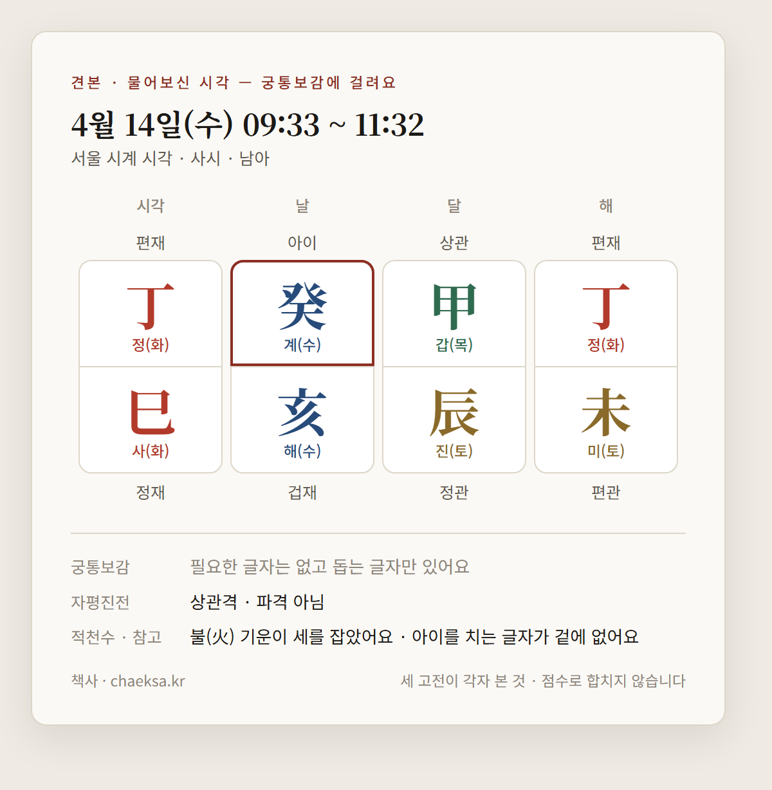
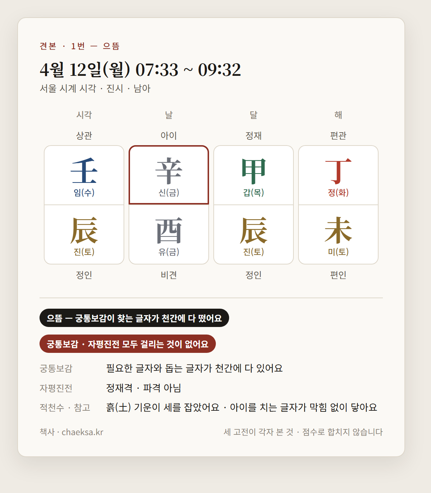
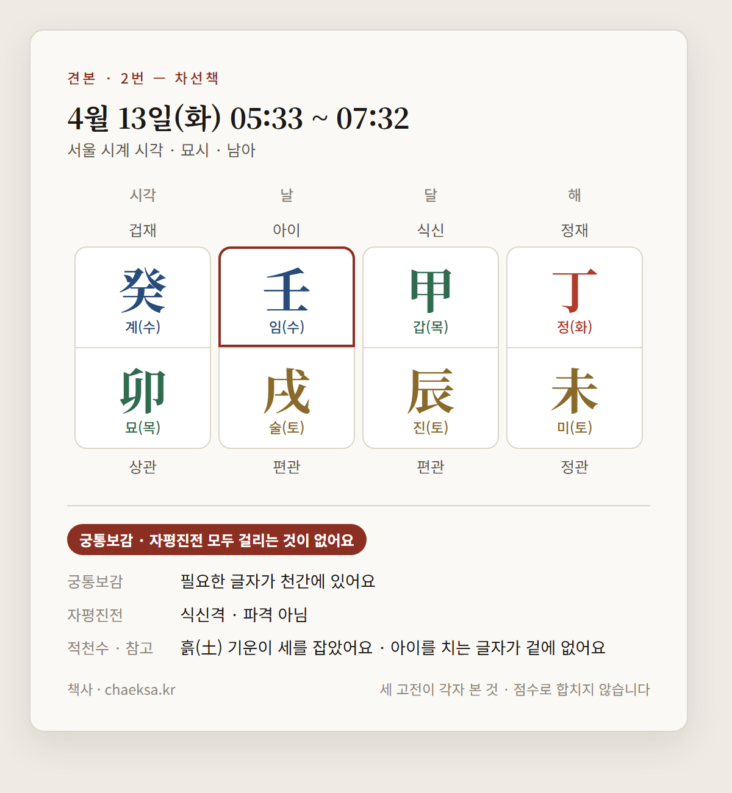
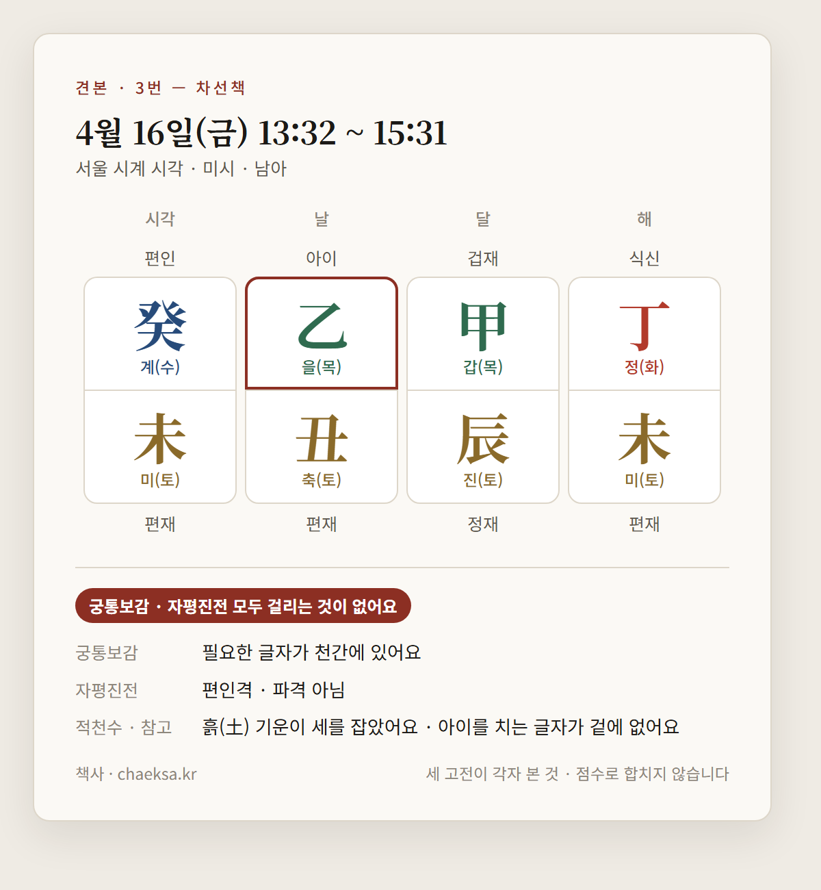

고객님, 알려 주신 출산 가능 범위와 가족 정보를 살폈어요.
책사의 기준으로 가장 좋은 날과 시간을 골랐어요. 첫 추천과 그 이유부터 말씀드릴게요.
먼저 병원에 제시할 날과 시간
병원에 제시할 출산 시간입니다. 이 구간에 출산이 가능한지 담당 의사에게 확인하세요.
이 아이에게 좋은 이유
진(辰)월에 태어난 신금(辛) 아이에게 궁통보감은 임수(壬)를 먼저 찾아요. 돕는 글자는 갑목(甲)이에요. 필요한 글자와 돕는 글자가 모두 드러나 있습니다.
사주의 큰 틀은 꼬박꼬박 버는 돈과 살림(정재격)입니다. 자평진전 기준으로 이 틀이 깨진 상태(파격)는 아닙니다.
이 아이처럼 신금(辛)이고 진월(辰)에 태어나 임수(壬)와 갑목(甲)이 위 글자에 드러난 경우, 궁통보감은 “부유하고 귀하게 됨이 필연이다(富貴必然)”라고 높이 평가합니다.
근거 보기
三月辛金，戊土司令，辛承正气，母旺子相，先壬后甲。壬甲两透，富贵必然。
봄 셋째 달의 신금은 임수를 먼저 쓰고 갑목을 다음에 쓴다. 임수와 갑목이 모두 위에 드러나면 부유하고 귀하게 됨이 필연이라고 했다.
이 평가의 원문 조건과 확인 범위
이 인용은 두 글자가 드러난 조건에 대한 책의 평가입니다. 뒤에는 丙과의 합, 戊가 물을 억누름, 흙·불의 과다, 비겁과 壬癸의 세력, 庚의 방해 등 별도 분기도 있습니다. 책사가 확인한 계절의 조건을 통과했다는 사실만으로 이 분기 전부가 해소됐다고 판정하지는 않습니다. 아이의 실제 부와 지위를 보장하는 문장은 아닙니다.
함께 확인한 경계 · 흠 두 가지 — 대운 충 · 적천수
- 2~11살 계묘(癸卯) 대운(10년마다 바뀌는 운)이 아이의 글자와 부딪혀요(충).
- 22~31살 신축(辛丑) 대운(10년마다 바뀌는 운)이 아이의 글자와 부딪혀요(충).
- 적천수(기운의 흐름을 보는 책)로 보면 정화(丁) 무겁고 급한 책임(편관)이 아이에게 막힘 없이 닿아요.
첫 번째로 권하는 이유
2·3번보다 먼저 권하는 이유는 으뜸 조건을 갖췄기 때문이에요.
추천 차례와 흠을 센 방법
책사의 첫 추천은 1번이에요. 으뜸 조건 → 흠이 적은 후보 → 원하시는 방향 → 예정일과의 거리 → 날짜와 시각 순서로 비교한 결과예요.
흠은 범주의 수입니다. 한 범주 안의 여러 일을 한 가지로 세며, 자미두수의 경계 수를 더한 숫자는 아닙니다.
물어보신 시각부터 살폈어요
4월 14일(수) 오전 10시
옛 시간 이름으로는 사시, 시계로는 오전 9시 33분 ~ 11시 32분 안이에요.

궁통보감(태어난 계절에 필요한 글자를 보는 책)의 기준에 걸려요.
- 진(辰)월에 태어난 계수(癸) 아이에게 궁통보감은 병화(丙)를 먼저 찾아요. 돕는 글자는 신금(辛)과 갑목(甲)이에요.
- 이 시각의 위 글자(천간)는 정화(丁) · 갑목(甲) · 정화(丁)예요 — 병화(丙)는 없어요. 돕는 글자는 있어요.
다른 곳에서 받으신 시각은 보는 기준이 다르면 결과도 달라요.
궁금하다고 하신 것
재물 — 1번은 위 글자(천간)에 꼬박꼬박 버는 돈과 살림(정재)이 떠 있고, 큰 틀(격)도 꼬박꼬박 버는 돈과 살림(정재격)이에요. 2번도 위 글자에 정재가 떠 있어요. 3번에는 재물이 드러나지 않아요.
근거 보기
- 근거 — 1번 위 글자에 꼬박꼬박 버는 돈과 살림(정재)
- 근거 — 1번 정재격
- 근거 — 2번 위 글자에 정재
- 근거 — 3번 재물 드러나지 않음
예정일 — 예정일은 4월 15일(목)이에요. 1번은 예정일 사흘 전, 2번은 이틀 전, 3번은 하루 뒤예요. 예정일에 가장 가까운 곳은 3번이에요.
근거 보기
- 근거 — 1번 예정일 사흘 전
- 근거 — 2번 예정일 이틀 전
- 근거 — 3번 예정일 하루 뒤
물어보신 시각 — 4월 14일(수) 오전 10시는 오전 9시 33분 ~ 11시 32분 자리에 들어가요. 이 시각은 궁통보감에 걸려요. 계절이 먼저 찾는 병화(丙)가 위 글자에 없기 때문이에요. 같은 날 오전 7시 33분 ~ 9시 32분은 두 고전을 통과했지만 가족 때문에 권하지 않아요.
근거 보기
- 근거 — 궁통보감에 걸림
- 근거 — 병화(丙) 없음
- 근거 — 같은 날 진시는 가족 때문에 권하지 않음
병원 시간 — 수술 가능 시간은 오전 7시 ~ 밤 9시이고, 세 곳 모두 이 안에 있어요. 일반 비교 기준인 평일 낮(9~17시)으로 보면 3번이 그 안에 있고, 1번은 평일 낮과 33분 겹치며, 2번은 연장 시간이에요.
근거 보기
- 근거 — 1번 평일 낮 33분
- 근거 — 2번 연장 시간
- 근거 — 3번 평일 낮
후보별 차이와 병원에 전달할 말
권하는 차례대로 적었습니다. 시간은 모두 신청하신 병원 가능 범위와 겹치는 구간입니다.
1번 · 4월 12일(월) · 오전 7시 33분 ~ 9시 32분
으뜸 · 흠 두 가지 — 대운 충 · 적천수 · 꼬박꼬박 버는 돈과 살림(정재격)
계절에 필요한 글자와 돕는 글자가 모두 드러나 있습니다.
원하시는 방향 — 재물 · 드러나요: 천간(위 글자)에 꼬박꼬박 버는 돈과 살림(정재) · 큰 틀(격)이 꼬박꼬박 버는 돈과 살림(정재격)
2번 · 4월 13일(화) · 오전 7시 ~ 7시 32분
차선책 · 흠 한 가지 — 대운 충 · 말과 재능으로 무언가 만들어 내는 일(식신격)
두 고전의 제외 기준을 통과했지만, 계절에 필요한 글자와 돕는 글자가 모두 드러난 으뜸 조건은 아닙니다.
첫 추천이 이 후보보다 앞서는 이유는 으뜸 조건을 갖췄기 때문이에요.
- 23~32살 신축(辛丑) 대운(10년마다 바뀌는 운)이 아이의 글자와 부딪혀요(충).
원하시는 방향 — 재물 · 드러나요: 천간(위 글자)에 꼬박꼬박 버는 돈과 살림(정재)
전체 시간대 새벽 5시 33분 ~ 오전 7시 32분 가운데 병원에서 가능한 33분만 제시했습니다.
3번 · 4월 16일(금) · 오후 1시 32분 ~ 3시 31분
차선책 · 흠 한 가지 — 대운 충 · 남들이 안 하는 공부(편인격)
두 고전의 제외 기준을 통과했지만, 계절에 필요한 글자와 돕는 글자가 모두 드러난 으뜸 조건은 아닙니다.
첫 추천이 이 후보보다 앞서는 이유는 으뜸 조건을 갖췄기 때문이에요.
- 24~33살 신축(辛丑) 대운(10년마다 바뀌는 운)이 아이의 글자와 부딪혀요(충).
- 아이의 시지(태어난 시각의 아래 글자)가 아이 아버지 사주의 일지(배우자 자리)와 합이 돼요.
원하시는 방향 — 재물 · 이곳에는 드러나지 않아요
정리
1번
- 사주 — 궁통보감 · 자평진전 두 고전에 걸리는 것이 없습니다 · 으뜸
- 대운 — 2~31살 대운 — 아이의 글자와 부딪히는 대운(충)이 있습니다. 「알아 둘 것」에 적었습니다.
- 자미두수 — 옛 책이 크게 반긴 말 0 · 크게 걱정한 말 0 (고르는 데는 쓰지 않았습니다)
2번
- 사주 — 궁통보감 · 자평진전 두 고전에 걸리는 것이 없습니다 · 차선책
- 대운 — 3~32살 대운 — 아이의 글자와 부딪히는 대운(충)이 있습니다. 「알아 둘 것」에 적었습니다.
- 자미두수 — 옛 책이 크게 반긴 말 0 · 크게 걱정한 말 0 (고르는 데는 쓰지 않았습니다)
3번
- 사주 — 궁통보감 · 자평진전 두 고전에 걸리는 것이 없습니다 · 차선책
- 대운 — 4~33살 대운 — 아이의 글자와 부딪히는 대운(충)이 있습니다. 「알아 둘 것」에 적었습니다.
- 자미두수 — 옛 책이 크게 반긴 말 0 · 크게 걱정한 말 1 (고르는 데는 쓰지 않았습니다)
상세 자미두수 대조
자미두수로 다시 본 장점과 경계
아래는 같은 추천 후보에 실제로 걸린 원문을 추린 대조 자료입니다. 자미두수로 후보를 새로 고르거나 순서를 바꾸지 않았습니다.
좋은 평가와 죽음·상실·질병 같은 경계는 책의 조건부 해석으로 함께 읽습니다. 한쪽으로 다른 쪽을 지우거나 아이의 실제 사건을 확정하지 않습니다.
1번
좋게 평가한 원문
- 명궁 — 좋은 사주에 나쁜 별(흉성)이 끼면 좋은 점과 흠이 함께 있다.
- 명궁 — 명궁 子 · 午에 태양이 있고 丁 · 己년생이면 재물과 지위를 함께 갖춘 구성(재관격)이다.
같이 걸린 경계
- 노복궁 — 천마가 타라를 만나면 다리가 부러진 말이라는 배치(절족마)다. 위에서 말한 이런 배치에 해당하면 모두 재앙과 병을 겪는다. 한 해 운(유년)에서 이런 배치를 만나도 같은 판단을 한다. — 천마와 타라가 노복궁 巳에 같이 있다
- 명궁 — 좋은 사주에 나쁜 별(흉성)이 끼면 좋은 점과 흠이 함께 있다.
- 명궁 — 태양 · 태음은 빛을 잃은 자리(반배)를 가장 꺼린다.
2번
좋게 평가한 원문
- 명궁 — 좋은 사주에 나쁜 별(흉성)이 끼면 좋은 점과 흠이 함께 있다.
- 명궁 — 남녀 모두 여섯 양의 시각(양시: 寅午戌申子辰)에 태어나면 아이 자신을 보는 칸(명궁)이 같은 여섯 양의 궁에 있어야 좋다. 여섯 음의 시각(음시: 巳酉丑亥卯未)에 태어나면 명궁이 같은 여섯 음의 궁에 있어야 좋다.
같이 걸린 경계
- 관록궁 — 천마가 타라를 만나면 다리가 부러진 말이라는 배치(절족마)다. 위에서 말한 이런 배치에 해당하면 모두 재앙과 병을 겪는다. 한 해 운(유년)에서 이런 배치를 만나도 같은 판단을 한다.
- 명궁 — 좋은 사주에 나쁜 별(흉성)이 끼면 좋은 점과 흠이 함께 있다.
- 명궁 — 천곡 · 천허는 나쁜 별이다. 명궁에 들면 해로운 작용이 매우 크다.
3번
좋게 평가한 원문
- 명궁 — 좋은 사주에 나쁜 별(흉성)이 끼면 좋은 점과 흠이 함께 있다.
- 명궁 — 남녀 모두 여섯 양의 시각(양시: 寅午戌申子辰)에 태어나면 아이 자신을 보는 칸(명궁)이 같은 여섯 양의 궁에 있어야 좋다. 여섯 음의 시각(음시: 巳酉丑亥卯未)에 태어나면 명궁이 같은 여섯 음의 궁에 있어야 좋다.
같이 걸린 경계
- 재백궁 — 천마가 타라를 만나면 다리가 부러진 말이라는 배치(절족마)다. 위에서 말한 이런 배치에 해당하면 모두 재앙과 병을 겪는다. 한 해 운(유년)에서 이런 배치를 만나도 같은 판단을 한다. — 천마와 타라가 재백궁 巳에 같이 있다
- 천이궁 — 염정 · 칠살 · 파군이 천이궁에 모이면 바깥길에서 죽는다. — 천이궁 삼방사정에 염정 · 칠살 · 파군 셋이 다 모인다
- 명궁 — 좋은 사주에 나쁜 별(흉성)이 끼면 좋은 점과 흠이 함께 있다.
병원에 전달하고 결정하는 순서
병원에는 이렇게 전달하세요
병원에 전달할 시계 시각은 4월 12일(월) 오전 7시 33분부터 오전 9시 32분까지예요. 추천 시간대와 신청서에 적어 주신 수술 가능 시간이 겹치는 구간이에요. 이 구간 안에 출산이 가능한지 담당 의사에게 확인하세요.
첫 추천이 불가능하다면
- 다음 후보의 실제 가능 구간에 출산할 수 있는지 병원에 확인하세요.
- 오후만 가능하다면 위 후보 가운데 오후와 겹치는 구간을 먼저 확인하세요. 목록에 없는 시각을 임의로 대신 고르지는 않습니다.
- 어느 후보도 가능하지 않다면 담당 의사가 허용한 새로운 출산 범위를 받아 다시 살펴야 합니다.
권하는 날짜와 시간
각 날짜와 시간마다 까닭 · 알아 둘 것 · 명식(태어난 해 · 달 · 날 · 시각의 여덟 글자) · 세 고전 · 가족 · 대운(10년마다 바뀌는 운) · 병원 시간을 같은 차례로 적었어요.
첫 추천 — 1번

까닭 — 으뜸이에요. 이 계절에 필요한 글자와 이를 돕는 글자가 천간(위 글자)에 모두 있어요(궁통보감).
알아 둘 것
흠이 두 가지 있어요. 아래에 적은 내용은 대운 충 · 적천수의 범주로 묶어 셌어요. 같은 범주에 해당하는 일이 여러 번이어도 한 가지로 세어요.
- 2~11살 계묘(癸卯) 대운(10년마다 바뀌는 운)이 아이의 글자와 부딪혀요(충).
- 22~31살 신축(辛丑) 대운(10년마다 바뀌는 운)이 아이의 글자와 부딪혀요(충).
- 적천수(기운의 흐름을 보는 책)로 보면 정화(丁) 무겁고 급한 책임(편관)이 아이에게 막힘 없이 닿아요.
충(서로 부딪히는 것)은 그 자리가 뜻하는 삶의 부분이 불안정해진다는 뜻이에요. 그래서 흠으로 세었어요.
일반적인 평일 낮 시간과 비교 — 비교 기준인 평일 낮(9~17시)과 겹치는 건 33분이에요. 이 비교 기준은 신청하신 병원의 실제 운영 시간이 아니에요. 추천 시간대의 끝을 넘으면 태어난 시각의 글자가 바뀌어요.
상세 풀이
근거 보기
時 壬辰 · 日 辛酉 · 月 甲辰 · 年 丁未
시주(태어난 시각) 임진(壬辰) · 일주(태어난 날) 신유(辛酉) · 월주(태어난 달) 갑진(甲辰) · 연주(태어난 해) 정미(丁未) — 일간(아이 자신을 뜻하는 글자)은 신금(辛)이에요.
글자마다 뜻 보기
- 태어난 시각의 위 글자(時干) 임수(壬) — 하고 싶은 말과 새로운 시도(상관)
- 태어난 시각의 아래 글자(時支) 진토(辰) — 배움과 자격(정인)
- 태어난 날의 위 글자(日干) 신금(辛) — 일간(아이 자신)
- 태어난 날의 아래 글자(日支) 유금(酉) — 나와 나란한 힘으로 제 일을 하는 것(비견)
- 태어난 달의 위 글자(月干) 갑목(甲) — 꼬박꼬박 버는 돈과 살림(정재)
- 태어난 달의 아래 글자(月支) 진토(辰) — 배움과 자격(정인)
- 태어난 해의 위 글자(年干) 정화(丁) — 무겁고 급한 책임(편관)
- 태어난 해의 아래 글자(年支) 미토(未) — 남들이 안 하는 공부(편인)
궁통보감 — 진(辰)월에 태어난 신금(辛) 아이에게 궁통보감은 임수(壬)를 먼저 찾아요. 돕는 글자는 갑목(甲)이에요. 이 시각의 위 글자(천간)는 정화(丁) · 갑목(甲) · 임수(壬)예요 — 임수(壬)가 있어요. 돕는 글자까지 천간(위 글자)에 다 있어요. 표에 적힌 글자가 빠짐없이 뜨는 시각은 드물어요.
근거 보기
辰月辛金 先壬後甲 壬甲兩透
진(辰)월에 태어난 신금(辛) 아이에게 궁통보감은 임수(壬)를 먼저 찾아요. 돕는 글자는 갑목(甲)이에요.
사주의 큰 틀을 보는 기준(자평진전) — 큰 틀(격)은 꼬박꼬박 버는 돈과 살림(정재격)이에요. 깨진 격(파격)이 아니에요.
근거 보기
財輕比重，財透七煞，財格敗也
재는 가벼운데 비겁이 무겁다 · 재가 칠살을 투출시킨다 — 재생살 — 이러면 정재격이 깨진다고 봐요. 이 시각은 깨진 격(파격)이 아니에요.
적천수(기운의 흐름을 보는 책)의 기준으로 아이를 해치는 기운이 방해 없이 작용하는지 봐요. 후보를 빼는 기준으로 쓰지는 않아요. 해당하면 흠으로 세요 — 흙(土) 기운이 세를 잡았어요. 아이를 치는 글자가 막힘 없이 닿아요. 흐름은 흙(土) 기운에서 시작해 쇠(金) 기운을 거쳐 물(水) 기운까지 가서 멈춰요 — 멈춘 곳은 임수(壬)예요.
근거 보기
何处起根源？流到何方住？
어디서 일어나 어디로 흘러 어디서 멈추나.
가족 — 아이의 일지 · 시지(태어난 날 · 시각의 아래 글자)는 가족의 사주(태어난 해 · 달 · 날 · 시각의 여덟 글자)의 일지(배우자 자리)와 부딪히지 않아요. 합(서로 묶이는 관계)도 없어요.
대운(10년마다 바뀌는 운) — 남아 기준이에요.
운의 변화(대운) 펼쳐 보기
- 2~11살 계묘(癸卯) 대운 — 위 글자(천간) 말과 재능으로 무언가 만들어 내는 일(식신) · 지지(아래 글자) 크게 벌이는 돈과 바깥일(편재)
- 12~21살 임인(壬寅) 대운 — 위 글자(천간) 하고 싶은 말과 새로운 시도(상관) · 지지(아래 글자) 꼬박꼬박 버는 돈과 살림(정재) · 계절이 먼저 찾던 임수(壬)가 와요
- 22~31살 신축(辛丑) 대운 — 위 글자(천간) 나와 나란한 힘으로 제 일을 하는 것(비견) · 지지(아래 글자) 남들이 안 하는 공부(편인)
- 32~41살 경자(庚子) 대운 — 위 글자(천간) 나와 나란한 힘으로 경쟁하거나 함께 일하는 것(겁재) · 지지(아래 글자) 말과 재능으로 무언가 만들어 내는 일(식신)
- 42~51살 기해(己亥) 대운 — 위 글자(천간) 남들이 안 하는 공부(편인) · 지지(아래 글자) 하고 싶은 말과 새로운 시도(상관) · 격이 하고 싶은 말과 새로운 시도(상관격)로 바뀌어요
기준별로 보면
- 고전 — 으뜸 · 적천수로 아이를 해치는 기운이 방해 없이 작용해요
- 아이 앞날 — 대운(10년마다 바뀌는 운)의 첫 세 기간에 아이의 글자와 부딪히는 대운이 있어요. 해당 나이와 글자는 대운 설명에 적었어요 · 태어난 계절에 먼저 필요한 글자가 12살에 시작하는 대운(10년마다 바뀌는 운)에 와요
- 원하시는 방향 — 재물 · 드러나요: 천간(위 글자)에 꼬박꼬박 버는 돈과 살림(정재) · 큰 틀(격)이 꼬박꼬박 버는 돈과 살림(정재격)
- 가족 — 부딪히는 자리가 없어요 · 합(서로 묶이는 자리) 없음
- 예정일 — 예정일 사흘 전
- 병원 — 평일 낮 33분 · 시각 창 120분
- 아이 성향 — 천간(위 글자)에 무겁고 급한 책임(편관) · 꼬박꼬박 버는 돈과 살림(정재) · 하고 싶은 말과 새로운 시도(상관)가 떠 있어요
다음 추천 — 2번 · 4월 13일(화) · 오전 7시 ~ 7시 32분

까닭 — 차선책이에요. 두 고전의 기준에 걸리는 것은 없어요(궁통보감 · 자평진전). 다만 이 계절에 필요한 글자와 이를 돕는 글자가 천간(위 글자)에 모두 있지는 않아요(궁통보감).
알아 둘 것
흠이 한 가지 있어요. 아래에 적은 내용은 대운 충의 범주로 묶어 셌어요. 같은 범주에 해당하는 일이 여러 번이어도 한 가지로 세어요.
- 23~32살 신축(辛丑) 대운(10년마다 바뀌는 운)이 아이의 글자와 부딪혀요(충).
충(서로 부딪히는 것)은 그 자리가 뜻하는 삶의 부분이 불안정해진다는 뜻이에요. 그래서 흠으로 세었어요.
같은 날 오전 7시 33분 ~ 9시 32분도 두 고전에 걸리지 않아요(흠 한 가지).
같은 날 오전 9시 33분 ~ 11시 32분도 두 고전에 걸리지 않아요(흠 한 가지).
같은 날 오전 11시 33분 ~ 오후 1시 32분도 두 고전에 걸리지 않아요(흠 한 가지).
같은 날 오후 1시 33분 ~ 3시 32분도 두 고전에 걸리지 않아요(흠 한 가지).
병원에 전달할 시계 시각은 4월 13일(화) 오전 7시부터 오전 7시 32분까지예요. 추천 시간대와 신청서에 적어 주신 수술 가능 시간이 겹치는 구간이에요. 이 구간 안에 출산이 가능한지 담당 의사에게 확인하세요.
일반적인 평일 낮 시간과 비교 — 평일 이른 아침(7~9시) · 저녁(17~19시) 시간이에요. 협의하면 잡아 주는 병원이 있어요.
상세 풀이
근거 보기
時 癸卯 · 日 壬戌 · 月 甲辰 · 年 丁未
시주(태어난 시각) 계묘(癸卯) · 일주(태어난 날) 임술(壬戌) · 월주(태어난 달) 갑진(甲辰) · 연주(태어난 해) 정미(丁未) — 일간(아이 자신을 뜻하는 글자)은 임수(壬)예요.
글자마다 뜻 보기
- 태어난 시각의 위 글자(時干) 계수(癸) — 나와 나란한 힘으로 경쟁하거나 함께 일하는 것(겁재)
- 태어난 시각의 아래 글자(時支) 묘목(卯) — 하고 싶은 말과 새로운 시도(상관)
- 태어난 날의 위 글자(日干) 임수(壬) — 일간(아이 자신)
- 태어난 날의 아래 글자(日支) 술토(戌) — 무겁고 급한 책임(편관)
- 태어난 달의 위 글자(月干) 갑목(甲) — 말과 재능으로 무언가 만들어 내는 일(식신)
- 태어난 달의 아래 글자(月支) 진토(辰) — 무겁고 급한 책임(편관)
- 태어난 해의 위 글자(年干) 정화(丁) — 꼬박꼬박 버는 돈과 살림(정재)
- 태어난 해의 아래 글자(年支) 미토(未) — 맡은 일과 책임(정관)
궁통보감 — 진(辰)월에 태어난 임수(壬) 아이에게 궁통보감은 갑목(甲)을 먼저 찾아요. 돕는 글자는 경금(庚)이에요. 이 시각의 위 글자(천간)는 정화(丁) · 갑목(甲) · 계수(癸)예요 — 갑목(甲)이 있어요.
근거 보기
辰月壬水 先甲後庚 甲木透干
진(辰)월에 태어난 임수(壬) 아이에게 궁통보감은 갑목(甲)을 먼저 찾아요. 돕는 글자는 경금(庚)이에요.
사주의 큰 틀을 보는 기준(자평진전) — 큰 틀(격)은 말과 재능으로 무언가 만들어 내는 일(식신격)이에요. 깨진 격(파격)이 아니에요.
근거 보기
食神逢梟，或生財露煞，食神格敗也
식신이 편인을 만난다 — 효신탈식 · 재를 생하는데 살까지 드러난다 — 이러면 식신격이 깨진다고 봐요. 이 시각은 깨진 격(파격)이 아니에요.
적천수(기운의 흐름을 보는 책)의 기준으로 아이를 해치는 기운이 방해 없이 작용하는지 봐요. 후보를 빼는 기준으로 쓰지는 않아요. 해당하면 흠으로 세요 — 흙(土) 기운이 세를 잡았어요. 아이를 치는 글자가 겉에 없어요. 흐름은 흙(土) 기운에서 시작하는데, 다음으로 받아 줄 쇠(金) 기운이 여덟 글자에 없어서 제자리에 머물러요.
근거 보기
何处起根源？流到何方住？
어디서 일어나 어디로 흘러 어디서 멈추나.
가족 — 아이의 일지 · 시지(태어난 날 · 시각의 아래 글자)는 가족의 사주(태어난 해 · 달 · 날 · 시각의 여덟 글자)의 일지(배우자 자리)와 부딪히지 않아요. 합(서로 묶이는 관계)도 없어요.
대운(10년마다 바뀌는 운) — 남아 기준이에요.
운의 변화(대운) 펼쳐 보기
- 3~12살 계묘(癸卯) 대운 — 위 글자(천간) 나와 나란한 힘으로 경쟁하거나 함께 일하는 것(겁재) · 지지(아래 글자) 하고 싶은 말과 새로운 시도(상관)
- 13~22살 임인(壬寅) 대운 — 위 글자(천간) 나와 나란한 힘으로 제 일을 하는 것(비견) · 지지(아래 글자) 말과 재능으로 무언가 만들어 내는 일(식신)
- 23~32살 신축(辛丑) 대운 — 위 글자(천간) 배움과 자격(정인) · 지지(아래 글자) 맡은 일과 책임(정관)
- 33~42살 경자(庚子) 대운 — 위 글자(천간) 남들이 안 하는 공부(편인) · 지지(아래 글자) 나와 나란한 힘으로 경쟁하거나 함께 일하는 것(겁재) · 계절이 찾던 돕는 글자 경금(庚)이 와요
- 43~52살 기해(己亥) 대운 — 위 글자(천간) 맡은 일과 책임(정관) · 지지(아래 글자) 나와 나란한 힘으로 제 일을 하는 것(비견) · 격이 무겁고 급한 책임(편관격)으로 바뀌어요
기준별로 보면
- 고전 — 차선책 · 적천수로 아이를 해치는 기운이 방해 없이 작용하지는 않아요
- 아이 앞날 — 대운(10년마다 바뀌는 운)의 첫 세 기간에 아이의 글자와 부딪히는 대운이 있어요. 해당 나이와 글자는 대운 설명에 적었어요
- 원하시는 방향 — 재물 · 드러나요: 천간(위 글자)에 꼬박꼬박 버는 돈과 살림(정재)
- 가족 — 부딪히는 자리가 없어요 · 합(서로 묶이는 자리) 없음
- 예정일 — 예정일 이틀 전
- 병원 — 연장 시간 · 시각 창 120분
- 아이 성향 — 천간(위 글자)에 꼬박꼬박 버는 돈과 살림(정재) · 말과 재능으로 무언가 만들어 내는 일(식신) · 나와 나란한 힘으로 경쟁하거나 함께 일하는 것(겁재)이 떠 있어요
다음 추천 — 3번 · 4월 16일(금) · 오후 1시 32분 ~ 3시 31분

까닭 — 차선책이에요. 두 고전의 기준에 걸리는 것은 없어요(궁통보감 · 자평진전). 다만 이 계절에 필요한 글자와 이를 돕는 글자가 천간(위 글자)에 모두 있지는 않아요(궁통보감).
알아 둘 것
흠이 한 가지 있어요. 아래에 적은 내용은 대운 충의 범주로 묶어 셌어요. 같은 범주에 해당하는 일이 여러 번이어도 한 가지로 세어요.
- 24~33살 신축(辛丑) 대운(10년마다 바뀌는 운)이 아이의 글자와 부딪혀요(충).
충(서로 부딪히는 것)은 그 자리가 뜻하는 삶의 부분이 불안정해진다는 뜻이에요. 그래서 흠으로 세었어요.
- 아이의 시지(태어난 시각의 아래 글자)가 아이 아버지 사주의 일지(배우자 자리)와 합이 돼요.
합(두 자리가 서로 묶임)은 흠으로 세지 않았어요.
병원에 전달할 시계 시각은 4월 16일(금) 오후 1시 32분부터 오후 3시 31분까지예요. 추천 시간대와 신청서에 적어 주신 수술 가능 시간이 겹치는 구간이에요. 이 구간 안에 출산이 가능한지 담당 의사에게 확인하세요.
일반적인 평일 낮 시간과 비교 — 비교 기준인 평일 낮(9~17시) 안이에요.
상세 풀이
근거 보기
時 癸未 · 日 乙丑 · 月 甲辰 · 年 丁未
시주(태어난 시각) 계미(癸未) · 일주(태어난 날) 을축(乙丑) · 월주(태어난 달) 갑진(甲辰) · 연주(태어난 해) 정미(丁未) — 일간(아이 자신을 뜻하는 글자)은 을목(乙)이에요.
글자마다 뜻 보기
- 태어난 시각의 위 글자(時干) 계수(癸) — 남들이 안 하는 공부(편인)
- 태어난 시각의 아래 글자(時支) 미토(未) — 크게 벌이는 돈과 바깥일(편재)
- 태어난 날의 위 글자(日干) 을목(乙) — 일간(아이 자신)
- 태어난 날의 아래 글자(日支) 축토(丑) — 크게 벌이는 돈과 바깥일(편재)
- 태어난 달의 위 글자(月干) 갑목(甲) — 나와 나란한 힘으로 경쟁하거나 함께 일하는 것(겁재)
- 태어난 달의 아래 글자(月支) 진토(辰) — 꼬박꼬박 버는 돈과 살림(정재)
- 태어난 해의 위 글자(年干) 정화(丁) — 말과 재능으로 무언가 만들어 내는 일(식신)
- 태어난 해의 아래 글자(年支) 미토(未) — 크게 벌이는 돈과 바깥일(편재)
궁통보감 — 진(辰)월에 태어난 을목(乙) 아이에게 궁통보감은 계수(癸)를 먼저 찾아요. 돕는 글자는 병화(丙)와 무토(戊)예요. 이 시각의 위 글자(천간)는 정화(丁) · 갑목(甲) · 계수(癸)예요 — 계수(癸)가 있어요.
근거 보기
辰月乙木 先用癸水 丙戊佐之 癸水透干
진(辰)월에 태어난 을목(乙) 아이에게 궁통보감은 계수(癸)를 먼저 찾아요. 돕는 글자는 병화(丙)와 무토(戊)예요.
사주의 큰 틀을 보는 기준(자평진전) — 큰 틀(격)은 남들이 안 하는 공부(편인격)예요. 깨진 격(파격)이 아니에요.
근거 보기
用神專尋月令，以四柱配之，必有成敗
사주의 큰 틀을 정하는 글자(용신)는 태어난 달의 기운(월령)에서만 찾는다. 태어난 해 · 달 · 날 · 시각의 글자(사주)를 맞춰 보면 반드시 큰 틀의 성립과 깨짐이 있다. 편인격은 여덟 가지 큰 틀(격)에 따로 나오지 않아, 전체에 적용하는 설명으로 적었어요(자평진전).
적천수(기운의 흐름을 보는 책)의 기준으로 아이를 해치는 기운이 방해 없이 작용하는지 봐요. 후보를 빼는 기준으로 쓰지는 않아요. 해당하면 흠으로 세요 — 흙(土) 기운이 세를 잡았어요. 아이를 치는 글자가 겉에 없어요. 흐름은 흙(土) 기운에서 시작하는데, 다음으로 받아 줄 쇠(金) 기운이 여덟 글자에 없어서 제자리에 머물러요.
근거 보기
何处起根源？流到何方住？
어디서 일어나 어디로 흘러 어디서 멈추나.
가족 — 아이의 일지(태어난 날의 아래 글자)는 가족의 사주(태어난 해 · 달 · 날 · 시각의 여덟 글자)의 일지(배우자 자리)와 부딪히지 않아요. 합(서로 묶이는 관계)은 위 「알아 둘 것」에 적었어요.
대운(10년마다 바뀌는 운) — 남아 기준이에요.
운의 변화(대운) 펼쳐 보기
- 4~13살 계묘(癸卯) 대운 — 위 글자(천간) 남들이 안 하는 공부(편인) · 지지(아래 글자) 나와 나란한 힘으로 제 일을 하는 것(비견) · 계절이 먼저 찾던 계수(癸)가 와요
- 14~23살 임인(壬寅) 대운 — 위 글자(천간) 배움과 자격(정인) · 지지(아래 글자) 나와 나란한 힘으로 경쟁하거나 함께 일하는 것(겁재)
- 24~33살 신축(辛丑) 대운 — 위 글자(천간) 무겁고 급한 책임(편관) · 지지(아래 글자) 크게 벌이는 돈과 바깥일(편재)
- 34~43살 경자(庚子) 대운 — 위 글자(천간) 맡은 일과 책임(정관) · 지지(아래 글자) 남들이 안 하는 공부(편인)
- 44~53살 기해(己亥) 대운 — 위 글자(천간) 크게 벌이는 돈과 바깥일(편재) · 지지(아래 글자) 배움과 자격(정인)
기준별로 보면
- 고전 — 차선책 · 적천수로 아이를 해치는 기운이 방해 없이 작용하지는 않아요
- 아이 앞날 — 대운(10년마다 바뀌는 운)의 첫 세 기간에 아이의 글자와 부딪히는 대운이 있어요. 해당 나이와 글자는 대운 설명에 적었어요 · 태어난 계절에 먼저 필요한 글자가 4살에 시작하는 대운(10년마다 바뀌는 운)에 와요
- 원하시는 방향 — 재물 · 이곳에는 드러나지 않아요
- 가족 — 부딪히는 자리가 없어요 · 합(서로 묶이는 자리) 1곳
- 예정일 — 예정일 하루 뒤
- 병원 — 평일 낮 · 시각 창 120분
- 아이 성향 — 천간(위 글자)에 말과 재능으로 무언가 만들어 내는 일(식신) · 나와 나란한 힘으로 경쟁하거나 함께 일하는 것(겁재) · 남들이 안 하는 공부(편인)가 떠 있어요
신청 내용을 이렇게 확인했어요
신청서에 적어 주신 내용을 아래와 같이 확인했어요.
아이 아버지와 아이 어머니 정보는 신청서의 각 칸에 적어 주신 대로 구분했어요.
네 단계로 좁혀 보기
조건을 하나씩 더해 단계마다 좋은 날짜와 시간을 날마다 한 곳씩, 세 날까지 골랐어요. 으뜸 → 흠이 적은 곳 → 원하시는 방향 → 예정일에 가까운 곳 → 날짜 순으로 적었어요. 4단계에 남은 곳이 이 보고서에서 권하는 날짜와 시간이에요.
1단계 — 기간만 보고: 두 고전에 걸리는 것 없는 곳 10곳(5일) 가운데 — 날마다 한 곳씩
- 4월 12일(월) · 오전 7시 33분 ~ 9시 32분 · 으뜸 · 흠 적천수(기운의 흐름을 보는 책)의 기준에서 아이를 해치는 기운이 방해 없이 작용함
- 4월 14일(수) · 오전 7시 33분 ~ 9시 32분 · 차선책 · 흠 없음
- 4월 13일(화) · 새벽 3시 33분 ~ 5시 32분 · 차선책 · 흠 없음
2단계 — 성별을 넣고 아이의 대운(10년마다 바뀌는 운)까지: 대운(10년마다 바뀌는 운)의 첫 세 기간에 충(부딪힘)이 있으면 흠으로 세었어요 — 날마다 한 곳씩
- 4월 12일(월) · 오전 7시 33분 ~ 9시 32분 · 으뜸 · 흠 대운(10년마다 바뀌는 운)의 첫 세 기간에 충(부딪힘), 적천수(기운의 흐름을 보는 책)의 기준에서 아이를 해치는 기운이 방해 없이 작용함
- 4월 14일(수) · 오전 7시 33분 ~ 9시 32분 · 차선책 · 흠 대운(10년마다 바뀌는 운)의 첫 세 기간에 충(부딪힘)
- 4월 13일(화) · 새벽 3시 33분 ~ 5시 32분 · 차선책 · 흠 대운(10년마다 바뀌는 운)의 첫 세 기간에 충(부딪힘)
3단계 — 수술 가능한 시간까지: 07:00~21:00 · 주말 빼고 — 남은 곳 9곳 — 날마다 한 곳씩
- 4월 12일(월) · 오전 7시 33분 ~ 9시 32분 · 으뜸 · 흠 대운(10년마다 바뀌는 운)의 첫 세 기간에 충(부딪힘), 적천수(기운의 흐름을 보는 책)의 기준에서 아이를 해치는 기운이 방해 없이 작용함
- 4월 14일(수) · 오전 7시 33분 ~ 9시 32분 · 차선책 · 흠 대운(10년마다 바뀌는 운)의 첫 세 기간에 충(부딪힘)
- 4월 13일(화) · 새벽 5시 33분 ~ 오전 7시 32분 · 차선책 · 흠 대운(10년마다 바뀌는 운)의 첫 세 기간에 충(부딪힘)
4단계 — 가족까지: 가족의 사주(태어난 해 · 달 · 날 · 시각의 여덟 글자)의 일지(배우자 자리)와 아이의 일지(태어난 날의 아래 글자)가 부딪히는 곳은 뺐어요. 아이의 시지(태어난 시각의 아래 글자)가 부딪히는 것은 흠으로 세었어요 — 남은 곳 7곳 — 날마다 한 곳씩
- 4월 12일(월) · 오전 7시 33분 ~ 9시 32분 · 으뜸 · 흠 대운(10년마다 바뀌는 운)의 첫 세 기간에 충(부딪힘), 적천수(기운의 흐름을 보는 책)의 기준에서 아이를 해치는 기운이 방해 없이 작용함 (권하는 곳 1번)
- 4월 13일(화) · 새벽 5시 33분 ~ 오전 7시 32분 · 차선책 · 흠 대운(10년마다 바뀌는 운)의 첫 세 기간에 충(부딪힘) (권하는 곳 2번)
- 4월 16일(금) · 오후 1시 32분 ~ 3시 31분 · 차선책 · 흠 대운(10년마다 바뀌는 운)의 첫 세 기간에 충(부딪힘) (권하는 곳 3번)
이런 자리가 얼마나 드문지 살폈어요
20년 87,660자리 가운데 으뜸 조건 통과 2.2%
- 으뜸 + 자미두수(별의 배치로 살피는 방법)1,214자리 · 1.4%명반(별 배치표)에 무서운 구절이 그대로 걸린 것이 없음
- 이 아이의 자리으뜸1,894자리 · 2.2%두 고전 통과 + 궁통보감(태어난 계절에 필요한 글자를 보는 책)이 정한 글자가 천간(위 글자)에 다 뜸
- 궁통보감(태어난 계절에 필요한 글자를 보는 책)에도 걸리지 않음18,228자리 · 20.8%두 고전 모두 통과
- 자평진전(사주의 큰 틀을 보는 책)에 걸리지 않음71,324자리 · 81.4%격(큰 틀)이 깨지지 않음
- 모든 날 모든 시각87,660자리 · 100%
이런 자리는 한 해 평균 95곳, 날로 치면 약 나흘에 한 번 두 시간 열려요.
서울 기준 2016-01-01 ~ 2035-12-31, 20년의 모든 날 · 모든 시진(두 시간 창)을 같은 계산으로 셌어요.
전체 시각 가운데 해당 조건을 통과한 비율이에요. 이 비율만으로 추천하지 않고, 출산 가능 범위와 가족 정보를 함께 살펴 권하는 차례를 정했어요.
기준별로 짚어 드려요
기준별로 가장 앞서는 날짜와 시간을 짚어 드려요. 권하는 차례와는 별개예요.
- 궁통보감(태어난 계절에 필요한 글자를 보는 책)의 기준에서 이 계절에 필요한 글자와 이를 돕는 글자가 천간(위 글자)에 모두 있는 곳(으뜸): 1번
- 자평진전(사주의 큰 틀을 보는 책)의 기준으로 보면 1번 꼬박꼬박 버는 돈과 살림(정재격) · 2번 말과 재능으로 무언가 만들어 내는 일(식신격) · 3번 남들이 안 하는 공부(편인격) · 모두 파격(큰 틀이 깨짐)이 아니에요
- 적천수(기운의 흐름을 보는 책)의 기준에서 아이를 해치는 기운이 방해 없이 작용하지 않는 곳: 2번 · 3번 · 그 밖에 4곳
- 원하시는 방향 — 재물: 재성(쌓이는 돈 · 움직이는 돈)이 천간(위 글자)에 떴거나, 격(큰 틀)이 재격(돈을 중심으로 보는 큰 틀)인 곳 — 1번 · 2번 · 그 밖에 4곳
- 예정일 — 예정일에 가장 가까운 곳(예정일 하루 뒤): 3번
- 병원 — 일반적인 시간대 비교에서 앞서는 곳(신청 병원의 확정 일정은 아님)(평일 낮): 3번 · 그 밖에 3곳
관점 더 보기
- 아이 앞날 — 1번: 대운(10년마다 바뀌는 운)의 첫 세 기간에 아이의 글자와 부딪히는 대운이 있어요. 해당 나이와 글자는 대운 설명에 적었어요 · 태어난 계절에 먼저 필요한 글자가 12살에 시작하는 대운(10년마다 바뀌는 운)에 와요 / 2번: 대운(10년마다 바뀌는 운)의 첫 세 기간에 아이의 글자와 부딪히는 대운이 있어요. 해당 나이와 글자는 대운 설명에 적었어요 / 3번: 대운(10년마다 바뀌는 운)의 첫 세 기간에 아이의 글자와 부딪히는 대운이 있어요. 해당 나이와 글자는 대운 설명에 적었어요 · 태어난 계절에 먼저 필요한 글자가 4살에 시작하는 대운(10년마다 바뀌는 운)에 와요
- 가족 — 가족과 합(서로 묶이는 자리)이 있고 부딪히지 않는 곳: 3번 · 그 밖에 1곳
- 아이 성향 — 천간(위 글자)에 나타난 것으로 보면 1번 무겁고 급한 책임(편관) · 꼬박꼬박 버는 돈과 살림(정재) · 하고 싶은 말과 새로운 시도(상관) / 2번 꼬박꼬박 버는 돈과 살림(정재) · 말과 재능으로 무언가 만들어 내는 일(식신) · 나와 나란한 힘으로 경쟁하거나 함께 일하는 것(겁재) / 3번 말과 재능으로 무언가 만들어 내는 일(식신) · 나와 나란한 힘으로 경쟁하거나 함께 일하는 것(겁재) · 남들이 안 하는 공부(편인)
자미두수(별의 배치로 살피는 방법)로 권하는 날짜와 시간을 다시 본 결과
앞에서 고른 날짜와 시간을 자미두수(별의 배치로 살피는 방법)로 한 번 더 살폈어요. 그 시각에 태어날 아이의 명반(별을 배치한 표)을 봤어요. 이 방법으로 후보를 고르거나 빼지는 않았어요. 부모 · 형제 · 몸처럼 삶의 각 부분을 궁(열두 칸)으로 나누어 살피는 책의 내용을 그대로 적었어요.
아이의 별 배치가 옛 책의 조건에 그대로 맞는 구절로만 결론을 냈어요(근거는 모두 《자미두수전서》 원문). 좋은 일을 말하는 구절과 무서운 일을 말하는 구절이 함께 해당하면 둘 다 그대로 실었어요.
계산 방법 — 펼쳐 보기
읽은 방법 — 「본다」는 삼방사정(맞은편 칸과 삼각형으로 이어지는 두 칸까지 살피는 범위)으로 읽었어요. 「만난다」 · 「더한다」 · 「같이 있다」는 같은 궁(삶의 한 부분을 살피는 칸)에 있을 때로 읽었어요. 원문은 글자마다 범위를 정하지 않았어요. 그래서 책사가 이 읽기 규칙을 정했어요. 길성(좋은 별)인지는 밝기와 따로 봤어요. 다만 낙함(어두운 자리)에 있는 좋은 별은 좋은 작용이 약한 것으로 적었어요. (見 · 逢 · 加 · 同)
계산 기준 — 해가 바뀌는 기준은 입춘(봄이 시작되는 절기)이에요. 사화(사화, 태어난 해에 따라 네 별에 생기는 변화)는 《자미두수전서》의 표를 따랐어요. 시각은 진태양시(태어나는 곳에서 해의 위치로 잰 시간)를 썼어요. 태어나는 곳의 경도 · 그때의 표준시 · 서머타임을 반영했어요. 그 시각으로 밤 11시가 되면 다음 날로 계산했어요. 별을 놓는 법과 원문은 위키문헌 《자미두수전서》 전사본을 따랐어요. 구절마다 「오늘 말」을 먼저 적고 원문과 직역을 뒤에 붙였어요. 「오늘 말」은 옛 책의 말을 오늘 삶의 일로 옮긴 풀이예요. 옮길 수 없는 구절은 옮기지 않았다고 적었어요. (卷一 · 卷二 · 卷三)
1번 아이의 명반
아이 자신을 보는 칸(명궁) — 자 자리
몸이 머무는 칸(신궁) — 돈을 보는 칸(재백궁)
오행국 — 목삼국
10년 운(대한) — 3세에 형제궁에서 시작
칸마다 큰 글자는 그 칸의 중심 별(주성)이에요. 작은 글자는 함께 있는 별이에요. 별 옆의 작은 말은 별의 밝기예요. 가장 밝음 · 밝음 · 꽤 밝음 · 조금 밝음 · 보통 · 조금 어두움 · 빛 잃음으로 나눠요. 화록 · 화권 · 화과 · 화기는 태어난 해의 글자가 그 별에 붙인 변화예요. 칸 아래 나이는 그 칸이 맡는 10년(대한)이에요. 작은 별은 싣지 않았어요. (밝기 원문: 廟 · 旺 · 得地 · 利益 · 平和 · 不得地 · 落陷 / 변화 원문: 化祿 · 化權 · 化科 · 化忌)
1번 · 4월 12일(월) 오전 7시 33분 ~ 9시 32분 — 이 명반(별 배치표)에서 본 것
명궁은 자 자리의 태양. 열두 궁에서 원문 조건이 글자 그대로 걸린 구절 57줄 — 좋게 보는 것 27 · 조심을 말하는 것 24.
이 아이는 어떤 사람으로 자라나
- 원문은 명궁에 해로운 별이 있고 별이 힘을 잃은 자리에 있으면, 10년 운(대한)과 한 해 운(소운)이 시작되기 전까지 탈이 많고 키우기 어렵다고 본다. 부모를 잃거나 부모가 다치는 일도 생긴다고 본다(형극). 영유아 검진 · 예방접종을 정해진 날짜에 받아라. 아이가 아픈 기색을 보이면 미루지 말고 바로 병원에 데려가라. 부모님 두 분의 건강도 함께 챙겨라. (卷三 「论小儿命」)
- 원문은 좋게 타고난 점과 흠이 함께 있다고 본다. 아이가 거칠게 행동할 때 억누르기보다 스스로 다스리는 법을 함께 연습하라. (卷一 · 斗数骨髓赋 「吉有凶星，美玉瑕玷。」)
- 언제 — 어린 시절 운(동한)으로 1세(우리 나이)가 명궁이다. (卷二 「一命二财三疾厄，四妻五福六官禄」)
명궁(자 자리 태양(빛 잃음))과 둘레 삼방사정(오 자리 천량 · 진 자리 거문 · 신 자리 빈 궁), 그리고 태어난 시(진시)로 보았습니다.
오늘 말 — 타고난 조건이 좋아도 흉한 별이 끼면, 잘 풀리는 삶에 흠이 되는 일이 따릅니다.
근거 보기
吉有凶星，美玉瑕玷。
좋은 사주에 나쁜 별(흉성)이 끼면 좋은 점과 흠이 함께 있다.
오늘 말 — 태양·태음은 빛을 잃은 자리에 놓이는 것을 가장 나쁘게 봅니다. 옛 책은 그로 인해 어떤 일이 생기는지까지는 말하지 않습니다.
근거 보기
日月最嫌反背
태양 · 태음은 빛을 잃은 자리(반배)를 가장 꺼린다.
오늘 말 — 타고난 성향을 보는 ‘자 · 오’ 자리에 태양이 있고 정 · 기년생이면 돈과 높은 지위를 함께 얻습니다.
근거 보기
子宫陷午宫旺，丁己生人财官格
명궁 子 · 午에 태양이 있고 丁 · 己년생이면 재물과 지위를 함께 갖춘 구성(재관격)이다.
부모와의 사이는
- 아버님 건강을 먼저, 미루지 말고 챙겨라. 아버님 건강검진을 아이 일정만큼 우선하라. (卷二 · 父母 「太阳在陷宫主先克父」)
- 원문은 이 별 배치에서 부모에게 탈이 생긴다고 본다. 부모님 두 분의 건강을 미루지 말고 챙겨라. (卷二 · 父母 「加羊陀火铃空劫主伤」)
- 원문은 아이와 부모의 사이를 좋게 본다. 아이 돌보는 일을 한쪽 부모에게 몰지 마라. 아버님 · 어머님이 함께 맡아라. (卷二 · 父母 「天府父母双全」)
부모궁(축 자리 천부(가장 밝음))과 아버지 별 태양(자 자리 · 빛 잃음) · 어머니 별 태음(인 자리 · 밝음), 그리고 띠(양띠)와 태어난 시(진시)로 보았습니다.
오늘 말 — 아버지를 나타내는 별인 태양이 힘을 잃은 상태이면, 옛 책은 어머니보다 아버지를 먼저 일찍 여읜다고 봅니다.
근거 보기
太阳在陷宫主先克父
태양이 함궁에 있으면 아버지를 먼저 잃는다.
오늘 말 — 부모를 보는 자리에 천부가 있고 경양·타라·화성·영성·지공·지겁이 더해지면, 옛 책은 다치는 일이 있다고 봅니다. 다치는 사람이 누구인지는 원문에 적혀 있지 않습니다.
근거 보기
加羊陀火铃空劫主伤
경양 · 타라 · 화성 · 영성 · 지공 · 지겁이 더해지면 부모가 다친다.
오늘 말 — 부모를 보는 자리에 천부가 있으면, 옛 책은 부모님 두 분 모두 살아 계신다고 봅니다.
근거 보기
天府父母双全
천부가 부모궁에 있으면 부모가 모두 살아 계신다.
몸은
- 어릴 때 잔병을 앓는다고 보고 대비하라. 예방접종 · 영유아 검진을 정해진 날짜에 받아라. 열 · 기침이 나면 「크면 낫겠지」 하며 미루지 말고 바로 병원에 데려가라. (卷二 · 疾厄 「廉贞襁褓灾疮腰足之疾」 · 卷二 · 疾厄 「七杀幼年多灾，长主痔疾」)
- 원문은 이 별 배치에서 팔다리 · 머리 · 얼굴을 다친다고 말한다. 놀이터 · 계단 · 탈것에서 부딪히고 다치는 일을 먼저 조심시켜라. (卷二 · 疾厄 「加擎羊四肢有伤残」 · 卷二 · 疾厄 「擎羊有头疯之症，或四肢欠力，头面破相延寿」)
- 몸을 볼 때 원문은 질액궁보다 명궁을 먼저 보라 한다. 이 아이는 명궁 별 태양이 함락하고 명궁 둘레(삼방사정)에 거문 화기(진 자리)가 모인다. 2권 질액 장은 경양 · 타라 · 화성 · 영성을 팔다리 다침과 함께 말하니, 놀이터 · 계단 · 탈것에서 다치지 않게 먼저 챙겨라.
- 원문은 이 별 배치에서 피부에 탈이 생긴다고 말한다. 종기 · 고름이 있는지 살피고 피부를 깨끗이 관리하라. 상처가 곪으면 바로 치료하라. (卷二 · 疾厄 「廉贞襁褓灾疮腰足之疾」)
- 원문은 이 별 배치에서 몸 아래쪽의 병을 말한다. 아이가 아랫배 · 항문(치질) 쪽에 불편이 있어도 부끄러워 숨기지 않게 하라. (卷二 · 疾厄 「七杀幼年多灾，长主痔疾」)
- 원문은 이 별 배치에서 눈병을 말한다. 아이의 눈을 일찍부터 챙겨라. 영유아 검진 때 시력 검사를 빠뜨리지 마라. 화면을 보는 시간을 줄여라. (卷二 · 疾厄 「廉贞同主目疾」)
- 원문은 이 별 배치에서 머리의 병을 말한다. 아이가 머리가 아프거나 어지럽다고 하면 넘기지 말고 살펴라. (卷二 · 疾厄 「擎羊有头疯之症，或四肢欠力，头面破相延寿」)
- 언제 — 어린 시절 운(동한)으로 3세(우리 나이)가 질액궁이다. 세 살(우리 나이) 무렵이 몸의 해다. 그해에는 예방접종 · 검진을 미루지 말고, 긴 여행 · 무리한 일정을 겹치지 마라. (卷二 「一命二财三疾厄，四妻五福六官禄」)
- 언제 — 43~52세(우리 나이) 대한이 이 궁(미 자리)이다. 3권은 이 10년을 「이룸과 무너짐이 엇갈린다」로 본다 — 그 10년엔 큰 결정을 한 번에 걸지 말고 나눠 하라. (成败不一)
원문 방법대로 명궁(자 자리 태양(빛 잃음))을 먼저 보고 질액궁(미 자리 염정(조금 밝음) · 칠살(가장 밝음))으로 보았습니다.
오늘 말 — 갓난아이의 타고난 성향을 보는 자리에 나쁜 별이 있거나 별이 힘을 잃으면, 큰 운과 해마다의 운이 시작되기 전까지 탈이 많아 키우기 어렵고 부모가 다치거나 세상을 떠나는 일을 겪습니다.
근거 보기
若命坐恶杀及缠陷弱之地，大小二限未行，断其灾多，难养，刑克父母。
명궁에 해로운 별(악살)이 있고 별이 힘을 잃은 자리(함약)에 있으면, 10년 운(대한)과 한 해 운(소운)이 시작되기 전까지 탈이 많다. 키우기 어렵다. 부모를 잃거나 부모가 다치는 일을 겪는다(부모를 형극한다).
오늘 말 — 건강을 보는 자리에 염정이 있으면, 옛 책은 갓난아기 때 종기나 부스럼으로 앓는다고 봅니다. 허리와 다리의 병도 말하지만, 그 병이 생기는 나이는 정하지 않습니다.
근거 보기
廉贞襁褓灾疮腰足之疾
염정이 질액궁에 있으면 갓난아이 때 종기로 고생하고 허리와 다리에 병이 있다.
오늘 말 — 건강을 보는 자리에 칠살이 있으면, 옛 책은 어려서는 앓거나 다치는 일이 많고 자라서는 치질을 앓는다고 봅니다.
근거 보기
七杀幼年多灾，长主痔疾
칠살이 질액궁에 있으면 어려서 탈이 많고, 자라서는 치질이 생긴다.
스스로 해내는 아이인가
- 자리에서 밀려나는 일을 한 번은 겪는다고 보고 대비하라. 반장 · 주장 · 대표 자리를 놓쳤을 때 부모가 대신 따져 주지 말고, 아이가 다시 해 보도록 기다려라. (卷二 · 官禄 「陷宫遭悔吝」)
- 언제 — 어린 시절 운(동한)으로 6세(우리 나이)가 관록궁이다. 여섯 살(우리 나이) 무렵, 처음 무언가를 배우기 시작할 때 잘하고 못함을 빨리 정하지 마라. (卷二 「一命二财三疾厄，四妻五福六官禄」)
- 언제 — 73~82세(우리 나이) 대한이 이 궁(진 자리)이다. 3권은 이 10년을 「이룸과 무너짐이 엇갈린다」로 본다 — 그 10년엔 큰 결정을 한 번에 걸지 말고 나눠 하라. (成败不一)
관록궁(진 자리 거문(빛 잃음))으로 보았습니다.
오늘 말 — 직장과 사회적 지위를 보는 자리에서 거문이 힘을 잃으면, 일과 지위 때문에 나중에 후회하거나 부끄러워할 일을 겪는다고 봅니다.
근거 보기
陷宫遭悔吝
함궁이면 후회하고 곤란해질 일을 겪는다.
오늘 말 — 10년 운이 든 자리에 경양·타라·화성·영성·지공·지겁·화기가 함께하면, 그 10년 동안 일이 이루어지기도 무너지기도 하며 한결같지 않습니다.
근거 보기
若限内有擎羊陀罗火铃空劫忌星为伴，成败不一。
10년 운(대한)이 든 궁에 경양 · 타라 · 화성 · 영성 · 지공 · 지겁 · 화기가 함께 있으면 성공과 실패가 엇갈린다.
동생이 생기면(형제)
- 원문은 이 별 배치에서 형제 사이가 멀어지거나 서로 힘이 되지 못한다고 본다. 형제끼리 저절로 친해지기를 기다리지 마라. 동생이 생기면 첫째와 따로 보내는 시간을 마련하라. 형제가 함께하는 시간도 부모가 마련해 둘이 가까워지도록 도와라. (卷二 · 兄弟 「破军七杀同有一人，不和睦」 · 卷二 · 兄弟 「见羊陀火铃空劫孤单」)
- 언제 — 첫 대한(3~12세, 우리 나이)이 바로 형제궁이다. 동생이 이 10년 안에 오면 그 일이 이 시기 아이의 가장 큰 일이니, 동생 맞이를 이 나이대에 맞춰 준비하라.
- 원문의 형제 「몇 명」 셈은 고전 규칙일 뿐 실제 가족 수를 맞히는 데 쓰지 않는다. 둘째를 낳을지 말지를 이것으로 정하지 마라.
형제궁(해 자리 무곡(보통) · 파군(보통))으로 보았습니다.
오늘 말 — 형제자매를 보는 자리에 무곡이 파군이나 칠살과 함께 있으면, 옛 책은 형제가 한 명이고 사이가 화목하지 않다고 봅니다.
근거 보기
破军七杀同有一人，不和睦
파군이나 칠살과 같이 있으면 형제가 한 명이고 화목하지 않다.
오늘 말 — 형제자매를 보는 자리의 무곡이 경양·타라·화성·영성·지공·지겁을 만나면, 기댈 형제 없이 홀로 지냅니다.
근거 보기
见羊陀火铃空劫孤单
경양 · 타라 · 화성 · 영성 · 지공 · 지겁을 보면 외롭다.
오늘 말 — 형제자매를 보는 자리에 파군·무곡이 함께 있으면, 옛 책은 형제가 두 명이라고 셉니다.
근거 보기
武曲同二人
무곡과 같이 있으면 형제가 두 명이다.
궁(삶의 각 부분을 나눈 열두 칸) 전부
명궁
오늘 말 — 인·오·술·신·자·진시에 태어나 타고난 성향과 삶을 보는 자리도 이 여섯 자리 중 하나이면, 바라는 일이 좋게 풀립니다. 사·유·축·해·묘·미시에 태어나 그 자리도 이 여섯 자리 중 하나인 경우 역시 같습니다.
근거 보기
凡男女生在寅午戌申子辰六阳时，安命在此六宫者吉。生在巳酉丑亥卯未六阴时，安命在此六宫者吉。
남녀 모두 여섯 양의 시각(양시: 寅午戌申子辰)에 태어나면 아이 자신을 보는 칸(명궁)이 같은 여섯 양의 궁에 있어야 좋다. 여섯 음의 시각(음시: 巳酉丑亥卯未)에 태어나면 명궁이 같은 여섯 음의 궁에 있어야 좋다. — 생시 辰(양시) · 명궁 子(양궁)
오늘 말 — 좌보·우필이 타고난 성향과 삶을 보는 자리나 일할 때의 활동을 보는 자리에 있으면 평생 평안과 즐거움을 넉넉히 누립니다. 이와 연결된 돈과 재산을 보는 자리나 직장과 사회적 지위를 보는 자리에 있으면 그다음으로 좋습니다.
근거 보기
右弼左辅终身福厚 在命宫迁移是也，三方次之
좌보 · 우필이 있으면 평생 누리는 복이 많다. 아이 자신을 보는 명궁 · 밖에서의 일을 보는 천이궁에 있을 때가 으뜸이다. 세 방향의 궁(삼방)에 있을 때는 그다음이다. — 좌보가 천이궁 · 우필이 삼합 申 — 으뜸 자리
오늘 말 — 옛 책은 어린 시절의 운을 볼 때 한 살에는 타고난 성향과 삶을 보는 자리, 두 살에는 돈과 재산을 보는 자리, 세 살에는 건강을 보는 자리를 살핍니다. 이어 네 살에는 배우자와 결혼을 보는 자리, 다섯 살에는 마음과 삶의 즐거움을 보는 자리, 여섯 살에는 직장과 사회적 지위를 보는 자리를 살피며, 나이는 태어난 해를 한 살로 셉니다.
근거 보기
一命二财三疾厄，四妻五福六官禄
어린 시절의 운(동한 · 童限)은 한 살에 아이 자신을 보는 명궁, 두 살에 재물을 보는 재백궁, 세 살에 몸의 병을 보는 질액궁을 본다. 네 살에는 배우자를 보는 부처궁, 다섯 살에는 마음과 복을 보는 복덕궁, 여섯 살에는 일을 보는 관록궁을 본다. — 童限 규칙 그대로 — 1세가 명궁 子
형제궁
오늘 말 — 옛 책은 갑·병·무·경·임년에 태어난 남자와 을·정·기·신·계년에 태어난 여자는 타고난 성향과 삶을 보는 자리 바로 앞의 부모를 보는 자리에서 첫 10년 운을 시작해 차례대로 나아간다고 적습니다. 을·정·기·신·계년에 태어난 남자와 갑·병·무·경·임년에 태어난 여자는 타고난 성향과 삶을 보는 자리 바로 뒤의 형제자매를 보는 자리에서 시작해 거꾸로 나아간다고 적습니다.
근거 보기
阳男阴女从命前一宫起顺行 是父母宫。阴男阳女从命后一宫起逆行 是兄弟宫
양의 해에 태어난 남자와 음의 해에 태어난 여자(양남음녀)는 명궁에서 한 칸 앞인 부모궁부터 순서대로 10년 운(대한)을 시작한다. 음의 해에 태어난 남자와 양의 해에 태어난 여자(음남양녀)는 명궁에서 한 칸 뒤인 형제궁부터 거꾸로 10년 운(대한)을 시작한다. — 생년 丁(음) · 남 — 첫 대한(3~12세)이 형제궁 亥
부처궁
- 원문은 이 별 배치에서 늦게 하는 혼인을 좋게 본다. 아이가 커서 혼인을 서두르지 않게 하라. (卷二 · 妻妾 「天同迟娶谐老，夫宜长妻宜少」)
- 원문은 이 별 배치에 나이가 더 많은 배우자가 맞다고 본다. 아이가 커서 손위 배우자를 꺼리지 않게 하라. (卷二 · 妻妾 「天同迟娶谐老，夫宜长妻宜少」)
- 평소 남에게 이로운 일을 하고 덕을 닦으면 흉한 10년 운(대한)도 해를 끼치지 못한다고 본다. 어려서부터 남을 돕는 습관을 들이게 하라. (虽凶不害 · 卷三)
- 언제 — 어린 시절 운(동한)으로 4세(우리 나이)가 부처궁이다. (卷二 「一命二财三疾厄，四妻五福六官禄」)
오늘 말 — 천동이 배우자를 보는 자리에 있으면 늦게 결혼해야 끝까지 함께 늙으며, 남편이 나이가 많고 아내가 어린 부부가 잘 맞습니다.
근거 보기
天同迟娶谐老，夫宜长妻宜少
천동이 부처궁에 있으면 늦게 혼인해야 함께 늙어 가며, 한쪽은 나이가 많고 다른 쪽은 어린 부부가 맞다. — 부처궁 戌에 천동(平和)
오늘 말 — 천괴와 천월이 있으면 부부가 아름답고, 이 별들이 배우자를 보는 자리에 있으면 배우자 덕에 돈을 얻습니다.
근거 보기
天魁天钺多主夫妇美丽，坐妻宫必主得妻财
천괴 · 천월이 있으면 부부가 아름다운 경우가 많으며, 부처궁에 있으면 반드시 배우자 덕에 재물을 얻는다. — 부처궁 戌에 천월
오늘 말 — 천괴와 천월이 배우자를 보는 자리에 있고 좋은 별이 더해지면 지위가 높고 외모가 아름다운 부부가 됩니다.
근거 보기
加吉星同主贵美夫妇
길성과 같이 있으면 지위가 높고 아름다운 배우자와 짝을 이룬다. — 부처궁 戌에 천월 · 같은 궁에 길성 천동 · 천동 화권
오늘 말 — 옛 책은 천동이 삶의 열두 분야 가운데 어느 자리에 있어도, 그 분야에 복이 있다고 봅니다.
근거 보기
十二宮中皆為福論
천동은 열두 궁 어디서나 복으로 본다. — 천동(平和)이 부처궁 戌에 있다
오늘 말 — 옛 책은 남이 모르게 남을 돕는 착한 일이 수명을 늘리고 온갖 복을 불러와, 운이 기울어도 다치지 않는다고 봅니다.
근거 보기
阴腾延寿生百福，虽然倒限不遭伤。
음덕은 목숨을 늘리고 온갖 복을 낳으니, 운이 기울어도 다치지 않는다. — 이 궁 대한에 흉한 구절(论大小限星辰过十二宫遇十二支所忌诀)이 걸려 함께 둔다 — 조건 없는 총칙
오늘 말 — 옛 책은 평소 남과 세상을 이롭게 하고 어려운 사람을 도우며 자신의 행동을 돌아보고 바르게 살면, 그 선행으로 복이 내려와 흉한 운에도 해를 입지 않는다고 봅니다.
근거 보기
平日利物济人，反身修德，以作善降福，虽凶不害。
평소 다른 사람과 세상에 이로운 일을 하고 어려운 사람을 도우며 자신을 돌아보고 덕을 닦으면, 선행으로 복을 받는다. 흉한 운이 와도 해를 입지 않는다. — 이 궁 대한에 흉한 구절(论大小限星辰过十二宫遇十二支所忌诀)이 걸려 함께 둔다 — 조건 없는 총칙
자녀궁
- 원문의 「아들 먼저」 「몇 명」 같은 성별 · 명수 셈은 고전 규칙일 뿐이다. 아이가 커서 자녀 계획(몇 명 · 언제)을 이것으로 정하지 마라.
- 이 궁에서 원문 조건이 그대로 걸린 구절은 성질을 말할 뿐 할 일을 말하지 않는다 — 「자미가 묘왕이면 아들 세 명과 딸 두 명을 둔다」 · 「경양 · 타라 · 화성 · 영성 · 지공 · 지겁이 더해지면 자식은 두 명뿐이며, 그렇지 않으면 첩에게서 난 자식이 많거나 대를 이을 양자를 맏이로 들인다」 · 「자미와 같이 있으면 자식이 두 명이다」. 할 일로 바꾸지 않고 그대로 둔다. (卷二 · 子女)
오늘 말 — 자녀를 몇 명 두는지는 먼저 자녀를 보는 자리에 어떤 별이 있는지 살펴봅니다.
근거 보기
凡看子女先看本宫星宿主有几子
자녀를 볼 때는 먼저 자녀궁의 별로 자식이 몇 명인지 본다. — 방법을 말하는 구절이라 어느 명반에나 그대로 적용된다
오늘 말 — 자녀를 보는 자리에 별이 없으면, 그 맞은편 자리에 있는 별만으로 자녀 수를 살펴봅니다.
근거 보기
如本宫无星曜专看对宫有何星宿主有几子
자녀궁에 별이 없으면 오로지 맞은편 궁의 별로 자식이 몇 명인지 본다. — 자녀궁 酉에 주성이 없다 — 대궁 卯(자미(旺) · 탐랑(利益))으로 본다
오늘 말 — 자녀를 보는 자리에서 자미가 강하게 힘을 쓰면, 옛 책은 아들 셋과 딸 둘을 둔다고 봅니다.
근거 보기
紫微庙旺男三女二
자미가 묘왕이면 아들 세 명과 딸 두 명을 둔다. — 자녀궁 酉은 빈 궁이라 대궁 卯의 자미(旺)을 빌려 봄 · 자미 旺 — 「묘왕」 맞음
오늘 말 — 자녀를 보는 자리의 자미에 경양·타라·화성·영성·지공·지겁이 더하면, 옛 책은 자녀를 둘만 둔다고 봅니다. 그렇지 않으면 혼인 관계 밖에서 낳은 자녀가 많거나, 입양한 자녀를 맏이로 삼는다고 봅니다.
근거 보기
加羊陀火铃空劫只一双，不然偏室生者多，或招祀子居长
경양 · 타라 · 화성 · 영성 · 지공 · 지겁이 더해지면 자식은 두 명뿐이며, 그렇지 않으면 첩에게서 난 자식이 많거나 대를 이을 양자를 맏이로 들인다. — 자녀궁 酉은 빈 궁이라 대궁 卯의 자미(旺)을 빌려 봄 · 같은 궁에 지겁
오늘 말 — 자녀를 보는 자리에 탐랑과 자미가 함께 있으면, 옛 책은 자녀 둘을 둔다고 봅니다.
근거 보기
紫微同二人
자미와 같이 있으면 자식이 두 명이다. — 자녀궁 酉은 빈 궁이라 대궁 卯의 탐랑(利益)을 빌려 봄 · 자미와 같은 궁
재백궁
- 원문은 이 별 배치에서 도와주는 사람(귀인)을 통해 돈을 번다고 본다. 이끌어 주는 윗사람과의 관계를 쉽게 끊지 않도록 가르쳐라. (卷二 · 财帛 「加吉星得贵人财」 · 卷二 · 财帛 「会诸吉星得贵人财」)
- 언제 — 어린 시절 운(동한)으로 2세(우리 나이)가 재백궁이다. (卷二 「一命二财三疾厄，四妻五福六官禄」)
오늘 말 — 돈과 재산을 보는 자리의 문곡에 좋은 별이 더해지면 힘 있는 사람 덕에 돈을 얻습니다.
근거 보기
加吉星得贵人财
길성이 더해지면 도움을 주는 사람 덕에 재물을 얻는다. — 재백궁 申에 문곡(得地) · 같은 궁에 길성 우필
오늘 말 — 돈과 재산을 보는 자리에 좌보·우필이 있으면, 그 자리가 열두 자리 중 어디에 놓이든 돈이 넉넉하다고 봅니다.
근거 보기
左辅右弼，诸宫富足
좌보 · 우필은 어느 궁에서나 넉넉하다. — 재백궁 申에 우필
오늘 말 — 돈과 재산을 보는 자리의 좌보 · 우필이 여러 좋은 별을 만나면 힘 있는 사람 덕에 돈을 얻습니다.
근거 보기
会诸吉星得贵人财
여러 길성을 만나면 도움을 주는 사람 덕에 재물을 얻는다. — 재백궁 申에 우필 · 삼방사정에 길성 문곡 · 태음(寅) · 태음 화록(寅) · 태양(子)
오늘 말 — 여러 흉한 별이 돈과 재산을 보는 자리를 비추면, 돈이 모였다 흩어졌다 하며 일정하게 쌓이지 않는다고 봅니다.
근거 보기
諸凶照財帛，聚散無常。
여러 나쁜 별(흉성)이 재백궁을 비추면 재물이 모였다 흩어지기를 반복한다. — 재백궁 삼방사정에 영성(寅) · 거문 화기(辰)
질액궁
오늘 말 — 옛 책은 건강을 볼 때 먼저 타고난 성향과 삶을 보는 자리에서 별이 힘을 잃었는지, 경양·타라·화성·영성·지공·지겁·화기가 직접 들어와 있거나 다른 자리에서 영향을 주는지 살핍니다. 그다음 건강을 보는 자리에 좋은 별과 나쁜 별이 어떻게 놓였는지, 별이 가장 힘을 내거나 힘이 센지 또는 힘을 잃었는지를 봅니다.
근거 보기
先看命宫星曜落陷加羊陀火铃空劫化忌守照如何，又看疾厄宫星曜善恶庙旺落陷如何断之
먼저 명궁 별이 약한 자리에 있는지와 경양 · 타라 · 화성 · 영성 · 지공 · 지겁 · 화기가 명궁에 있거나 영향을 주는지를 보고, 다음으로 질액궁 별의 좋고 나쁨과 묘왕인지 약한 자리인지를 살펴 판단한다. — 방법을 말하는 구절이라 어느 명반에나 그대로 적용된다
오늘 말 — 건강을 보는 자리에 염정이 칠살·파군·천부 중 하나와 함께 있으면, 옛 책은 앓거나 다치는 일이 적다고 봅니다.
근거 보기
七杀破军天府同灾少
칠살 · 파군 · 천부와 같이 있으면 탈이 적다. — 질액궁 未에 염정(利益) · 칠살 · 파군 · 천부와 같은 궁
오늘 말 — 건강을 보는 자리에 칠살·염정이 함께 있으면, 옛 책은 눈병이 난다고 봅니다.
근거 보기
廉贞同主目疾
염정과 같이 있으면 눈병이 있다. — 질액궁 未에 칠살(廟) · 염정과 같은 궁
오늘 말 — 건강을 보는 자리에 칠살이 있고 경양이 더해지면, 옛 책은 팔다리를 다쳐 제대로 쓰지 못하게 된다고 봅니다.
근거 보기
加擎羊四肢有伤残
경양이 더해지면 팔다리를 다쳐 장애가 남는다. — 질액궁 未에 칠살(廟) · 같은 궁에 경양
오늘 말 — 경양이 건강을 보는 자리에 있으면 머리에 풍증이라는 병이 생기거나 팔다리에 힘이 부족하고, 머리나 얼굴에 상처가 나야 오래 삽니다.
근거 보기
擎羊有头疯之症，或四肢欠力，头面破相延寿
경양이 질액궁에 있으면 머리가 아프고 어지럽거나 팔다리에 힘이 없으며, 머리와 얼굴에 상처가 나야 오래 산다. — 질액궁 未에 경양(廟)
오늘 말 — 어린아이의 삶을 볼 때는 어린 시절에 해마다 어느 자리를 보는지 따로 계산해 자세히 살핍니다.
근거 보기
若論小兒，詳推童限。
어린아이의 일을 볼 때는 어린 시절의 운(동한 · 童限)을 자세히 살핀다. — 아이 명반이다 — 방법 구절
오늘 말 — 미년(양띠)에 태어난 사람은 경양이 ‘진’·‘술’·‘축’·‘미’ 자리에 있는 것을 옛 책에서 꺼립니다.
근거 보기
又忌见擎羊在四墓宫。
未년생은 경양이 진 · 술 · 축 · 미의 네 궁인 사묘궁(辰戌丑未)에 있는 것도 꺼린다. — 未년생, 경양이 未(사묘궁)
천이궁
- 원문은 이 별 배치에서 밖으로 나가면 도와주는 사람(귀인)을 만나 뜻을 이룬다고 본다. 커서 집 · 고향을 떠나 공부하거나 일하겠다고 하면 막지 마라. (卷二 · 迁移 「文昌出外遇贵发达，小人不足」 · 卷二 · 迁移 「左辅动中贵人扶持发福」)
- 언제 — 53~62세(우리 나이) 대한이 이 궁(오 자리)이다. 3권은 이 10년을 「열 해가 고요하고 사람과 재물이 다 좋다」로 본다. (十年安静，人财全美)
오늘 말 — 외부 활동을 보는 자리에 천량이 있으면, 밖에서 힘 있는 사람과 가까이 지내고, 그 사람 덕에 일을 이룹니다.
근거 보기
天梁出外近贵贵人成就
천량이 천이궁에 있으면 밖에서 지위 높은 사람과 가까이 지내며 그 도움으로 뜻을 이룬다. — 천이궁 午에 천량(廟)
오늘 말 — 문창이 외부 활동을 보는 자리에 있으면 밖에서 힘 있는 사람의 도움으로 성공하지만 아랫사람의 도움은 부족합니다.
근거 보기
文昌出外遇贵发达，小人不足
문창이 천이궁에 있으면 밖에서 도움을 주는 사람을 만나 성공하지만 아랫사람과 잘 지내지 못한다. — 천이궁 午에 문창(落陷)
오늘 말 — 외부 활동을 보는 자리에 좌보가 있으면, 밖으로 움직이며 지내는 가운데 힘 있는 사람이 도와주어 좋은 일이 생기고 살림이 나아집니다.
근거 보기
左辅动中贵人扶持发福
좌보가 천이궁에 있으면 활동하면서 도움을 주는 사람을 만나 복을 누린다. — 천이궁 午에 좌보
오늘 말 — 외부 활동을 보는 자리에 녹존이 있으면, 밖에서 생활에 필요한 돈을 뜻대로 법니다.
근거 보기
禄存出外衣禄遂心
녹존이 천이궁에 있으면 밖에서 먹고 입을 것이 뜻대로 된다. — 천이궁 午에 녹존(廟)
오늘 말 — 일할 때의 활동을 보는 자리의 녹존이 경양·타라·화성·영성·지공·지겁을 만나면, 다른 사람과 뜻이 맞지 않는 일이 많다고 봅니다.
근거 보기
会羊陀火铃空劫与人多不足意
경양 · 타라 · 화성 · 영성 · 지공 · 지겁을 만나면 남과 맞지 않는 일이 많다. — 천이궁 午에 녹존(廟) · 삼방사정에 영성(寅)
오늘 말 — 10년 운이 든 자리의 별들이 모두 길한 별이고 저마다 가장 강한 상태·강한 상태·제 힘을 잘 내는 상태 가운데 하나이며 경양·타라·화성·영성·지공·지겁이 없으면, 그 10년은 조용하고 편안하며 가족과 재산에 관한 일도 모두 좋습니다.
근거 보기
如宫分星缠全吉庙旺得地，无擎羊陀罗火铃空劫者，主十年安静，人财全美。
10년 운(대한)이 든 궁의 별이 모두 좋은 별이고 힘을 잘 쓰는 자리(묘 · 왕 · 득지)에 있으며 경양 · 타라 · 화성 · 영성 · 지공 · 지겁이 없으면, 그 열 해는 평온하다. 사람과 재물도 모두 좋다. — 53~62세(우리 나이) 대한 午: 천량(廟), 살성 · 화기 없음
노복궁
- 무서운 구절이 그대로 걸린다: (천마가 타라를 만나면 다리가 부러진 말이라는 배치(절족마)다. 위에서 말한 이런 배치에 해당하면 모두 재앙과 병을 겪는다. 한 해 운(유년)에서 이런 배치를 만나도 같은 판단을 한다). 같은 자리를 좋게 보는 구절도 함께 걸린다: 천상이 노복궁에 있으면 말년에 아랫사람을 구한다. (《紫微斗數全書》 卷一 · 诸星问答论(天马) 「遇陀罗谓之折足马。以上犯此数者，俱主灾病，流年值之依此断。」 · 卷二 · 奴仆 「天相末年招得」)
- 아이가 커서 사람을 쓸 때 돈 · 열쇠 · 결정 권한을 한 사람에게 모두 맡기지 않게 하라. 나눠 맡기고 직접 확인하게 하라. 어려서 친구에게 맡긴 물건이나 돈을 잃으면 꾸짖기보다 나눠 맡기는 법을 가르쳐라. (卷二 · 奴仆 「陀罗奴仆欠力怨主」)
- 원문은 따르는 사람이 늦게 모인다고 본다. 젊을 때 사람이 따르지 않는다고 아이를 몰아세우지 마라. 커서도 사람 모으기를 서두르지 않게 하라. (卷二 · 奴仆 「天相末年招得」)
- 언제 — 63~72세(우리 나이) 대한이 이 궁(사 자리)이다. 3권은 이 10년을 「이룸과 무너짐이 엇갈린다」로 본다 — 그 10년엔 큰 결정을 한 번에 걸지 말고 나눠 하라. (成败不一)
오늘 말 — 천상이 아랫사람을 보는 자리에 있으면 노년에야 직원을 구합니다.
근거 보기
天相末年招得
천상이 노복궁에 있으면 말년에 아랫사람을 구한다. — 노복궁 巳에 천상(得地)
오늘 말 — 타라가 아랫사람을 보는 자리에 있으면 직원들이 나에게 힘이 되지 못하고 나를 원망합니다.
근거 보기
陀罗奴仆欠力怨主
타라가 노복궁에 있으면 아랫사람이 도움이 되지 못하고 주인을 원망한다. — 노복궁 巳에 타라(落陷)
오늘 말 — 천마가 타라를 만나면, 옛 책은 재앙과 병을 겪는다고 봅니다. 한 해의 운에서 두 별이 이렇게 만나는 경우에도 같은 판정을 내립니다.
근거 보기
遇陀罗谓之折足马。以上犯此数者，俱主灾病，流年值之依此断。
천마가 타라를 만나면 다리가 부러진 말이라는 배치(절족마)다. 위에서 말한 이런 배치에 해당하면 모두 재앙과 병을 겪는다. 한 해 운(유년)에서 이런 배치를 만나도 같은 판단을 한다. — 천마와 타라가 노복궁 巳에 같이 있다
오늘 말 — 나쁜 별이 아랫사람을 보는 자리에 들면 직원들에게서 도움을 받지 못합니다.
근거 보기
惡星應八宮，奴僕無助。
나쁜 별(악성)이 함께 일하는 아랫사람을 보는 여덟째 궁(노복궁)에 작용하면 아랫사람의 도움을 받지 못한다. — 노복궁 巳에 타라
전택궁
- 원문은 집 · 땅을 물려받기보다 스스로 마련한다고 본다. 아이가 커서 스스로 집을 마련할 계획을 일찍 세우게 하라. 돈 모으기도 일찍 시작하게 하라. (卷二 · 田宅 「紫微茂盛自置旺相」 · 卷二 · 田宅 「加羊陀火铃空劫，有置有去」)
- 원문은 아이가 물려받은 조상 재산을 그대로 지키지 못한다고 본다. 물려줄 재산을 한 번에 넘기지 마라. 집 · 땅은 아이 혼자 처분하도록 맡기지 마라. 나눠서 조건을 붙여 넘겨라. (卷二 · 田宅 「加羊陀火铃空劫，有置有去」)
오늘 말 — 사는 곳과 생활 기반을 보는 자리에 자미가 있으면, 가진 것이 넉넉하고 자기 힘으로 마련한 생활 기반을 크게 키웁니다.
근거 보기
紫微茂盛自置旺相
자미가 전택궁에 있으면 집과 땅이 많고, 스스로 마련한 집과 땅도 늘어난다. — 전택궁 卯에 자미(旺)
오늘 말 — 사는 곳과 생활 기반을 보는 자리에 자미가 있고 경양·타라·화성·영성·지공·지겁이 더해지면, 살 집과 재산을 마련하기도 하고 잃기도 합니다.
근거 보기
加羊陀火铃空劫，有置有去
경양 · 타라 · 화성 · 영성 · 지공 · 지겁이 더해지면 집과 땅을 마련했다 잃었다 한다. — 전택궁 卯에 자미(旺) · 같은 궁에 지겁
오늘 말 — 집과 부동산을 보는 자리의 탐랑이 자미와 함께 있으면 집안에서 물려받는 재산이 있습니다.
근거 보기
紫微同有祖业
자미와 같이 있으면 조상 재산이 있다. — 전택궁 卯에 탐랑(利益) · 자미와 같은 궁
복덕궁
- 마음 편히 쉬기 어려운 아이로 보고 쉬는 법을 가르쳐라. 일정 사이에 아무것도 하지 않는 시간을 마련하라. 조바심을 내거나 보채도 「산만하다 · 게으르다」며 꾸짖지 마라. (卷二 · 福德 「加羊陀火铃空劫奔走不得宁静」 · 卷二 · 福德 「天机同心忙」 외 2줄)
- 원문은 나중에 마음이 편해진다고 본다. 젊을 때 마음이 바쁘다고 평생 그렇다고 단정하지 마라. (卷二 · 福德 「天机先劳后逸」)
- 원문은 넷째로 마음과 복을 보는 복덕궁에서 화권 · 화록 · 지겁 · 지공과 별이 힘을 얻거나 잃는 자리를 살핀다고 한다. 복덕궁이 돈을 보는 재백궁과 마주 보기 때문이다. 돈이 모였다 흩어질 때 마음도 함께 흔들리는 관계로 본다. 아이의 마음을 지키려면 재백궁에 적힌 할 일도 지켜라. (卷三 · 谈星要论 「四看福德宫权禄劫空庙陷，以福德宫对财帛宫也。」)
- 언제 — 어린 시절 운(동한)으로 5세(우리 나이)가 복덕궁이다. 다섯 살(우리 나이) 무렵 불안 · 보챔이 보이면 이 자리의 일로 보고 다그치지 말고 기다려 줘라. (卷二 「一命二财三疾厄，四妻五福六官禄」)
오늘 말 — 마음과 삶의 즐거움을 보는 자리에 천기가 있으면, 처음에는 고생하지만 나중에는 편안해집니다.
근거 보기
天机先劳后逸
천기가 복덕궁에 있으면 처음에는 고생하고 나중에는 편하다. — 복덕궁 寅에 천기(得地)
오늘 말 — 마음과 삶의 즐거움을 보는 자리에서 천기와 태음이 함께하면, 즐겁게 삽니다.
근거 보기
太阴同主快乐
태음과 같이 있으면 즐겁다. — 복덕궁 寅에 천기(得地) · 태음과 같은 궁
오늘 말 — 마음과 삶의 즐거움을 보는 자리에 천기가 있고 경양·타라·화성·영성·지공·지겁이 더해지면, 이리저리 바쁘게 뛰어다니느라 조용히 쉬지 못합니다.
근거 보기
加羊陀火铃空劫奔走不得宁静
경양 · 타라 · 화성 · 영성 · 지공 · 지겁이 더해지면 바쁘게 돌아다니며 편안하지 않다. — 복덕궁 寅에 천기(得地) · 같은 궁에 영성
오늘 말 — 마음과 삶의 즐거움을 보는 자리에서 태음과 천기가 함께하면, 마음이 바쁩니다.
근거 보기
天机同心忙
천기와 같이 있으면 마음이 바쁘다. — 복덕궁 寅에 태음(旺) · 천기와 같은 궁
오늘 말 — 마음과 삶의 즐거움을 보는 자리에 태음이 있고 경양·타라·화성·영성·지공·지겁이 더해지면, 걱정과 기쁨을 모두 겪으며 조용히 지내지 못합니다.
근거 보기
加羊陀火铃空劫，有忧有喜，不得安静
경양 · 타라 · 화성 · 영성 · 지공 · 지겁이 더해지면 걱정과 기쁨이 모두 있고 편안하지 않다. — 복덕궁 寅에 태음(旺) · 같은 궁에 영성
오늘 말 — 마음과 삶의 즐거움을 보는 자리에 영성이 있으면, 고생하며 삽니다.
근거 보기
铃星劳苦
영성이 복덕궁에 있으면 고생한다. — 복덕궁 寅에 영성(廟)
오늘 말 — 마음과 삶의 즐거움을 보는 자리에 영성이 있고 길한 별들이 더해지면, 무난하게 지냅니다.
근거 보기
加吉星平和
길성이 더하면 무난하다. — 복덕궁 寅에 영성(廟) · 같은 궁에 길성 태음 · 태음 화록
오늘 말 — 태음이 빛을 잃는 자리에 있지 않으면, 옛 책은 복이 된다고 봅니다.
근거 보기
有輝為福
태음은 빛이 있으면 복을 준다. — 태음이 寅에서 旺
오늘 말 — 옛 책은 별 배치표를 읽는 넷째 차례로 마음과 삶의 즐거움을 보는 자리에서 화권·화록·지겁·지공을 살피고, 별이 가장 힘을 쓰는 상태인지 힘을 잃은 상태인지 확인하라고 적습니다. 이 자리는 돈과 재산을 보는 자리와 마주 보기 때문입니다.
근거 보기
四看福德宫权禄劫空庙陷，以福德宫对财帛宫也。
넷째로 마음과 복을 보는 복덕궁에서 권한과 재물의 변화인 화권 · 화록(권록), 지겁 · 지공(겁공), 별이 힘을 얻거나 잃는 자리(묘함)를 살핀다. 복덕궁이 재물을 보는 재백궁과 마주 보기 때문이다. — 복덕궁 寅의 대궁이 재백궁 申다 — 방법 구절
부모궁
오늘 말 — 옛 책은 부모의 일을 살필 때 태양을 아버지를 나타내는 별로, 태음을 어머니를 나타내는 별로 봅니다.
근거 보기
凡看父母以太阳星为父，太阴星为母
부모는 태양을 아버지 별, 태음을 어머니 별로 본다. — 방법을 말하는 구절이라 어느 명반에나 그대로 적용된다
오늘 말 — 부모를 보는 자리에 화성이 있고 길한 별들이 더해지면, 부모에 관한 일은 무난하게 풀립니다.
근거 보기
加吉星平和
길성이 더하면 무난하다. — 부모궁 丑에 화성(得地) · 같은 궁에 길성 천부
오늘 말 — 천곡·천허가 축·묘·신 자리에 있으면 좋게 보며, 녹존이나 화록을 만나면 이름을 널리 떨칩니다.
근거 보기
丑卯申宫吉，遇禄名显扬
천곡 · 천허가 丑 · 卯 · 申궁에 있으면 좋다. 벼슬에 따른 수입을 뜻하는 녹을 만나면 이름을 널리 알린다. — 천허가 丑궁 — 「丑卯申宫」 맞음
2번 아이의 명반
아이 자신을 보는 칸(명궁) — 축 자리
몸이 머무는 칸(신궁) — 바깥 활동을 보는 칸(천이궁)
오행국 — 목삼국
10년 운(대한) — 3세에 형제궁에서 시작
칸마다 큰 글자는 그 칸의 중심 별(주성)이에요. 작은 글자는 함께 있는 별이에요. 별 옆의 작은 말은 별의 밝기예요. 가장 밝음 · 밝음 · 꽤 밝음 · 조금 밝음 · 보통 · 조금 어두움 · 빛 잃음으로 나눠요. 화록 · 화권 · 화과 · 화기는 태어난 해의 글자가 그 별에 붙인 변화예요. 칸 아래 나이는 그 칸이 맡는 10년(대한)이에요. 작은 별은 싣지 않았어요. (밝기 원문: 廟 · 旺 · 得地 · 利益 · 平和 · 不得地 · 落陷 / 변화 원문: 化祿 · 化權 · 化科 · 化忌)
2번 · 4월 13일(화) 새벽 5시 33분 ~ 오전 7시 32분 — 이 명반(별 배치표)에서 본 것
명궁은 축 자리의 천동 · 거문. 열두 궁에서 원문 조건이 글자 그대로 걸린 구절 51줄 — 좋게 보는 것 26 · 조심을 말하는 것 20. 띠와 태어난 시만 보는 의 가 걸린다. (卷三 「论小儿克亲」 · 「主先克母」)
이 아이는 어떤 사람으로 자라나
- 원문은 명궁에 해로운 별이 있고 별이 힘을 잃은 자리에 있으면, 10년 운(대한)과 한 해 운(소운)이 시작되기 전까지 탈이 많고 키우기 어렵다고 본다. 부모를 잃거나 부모가 다치는 일도 생긴다고 본다(형극). 영유아 검진 · 예방접종을 정해진 날짜에 받아라. 아이가 아픈 기색을 보이면 미루지 말고 바로 병원에 데려가라. 부모님 두 분의 건강도 함께 챙겨라. (卷三 「论小儿命」)
- 원문은 좋게 타고난 점과 흠이 함께 있다고 본다. 아이가 거칠게 행동할 때 억누르기보다 스스로 다스리는 법을 함께 연습하라. (卷一 · 斗数骨髓赋 「吉有凶星，美玉瑕玷。」)
- 언제 — 어린 시절 운(동한)으로 1세(우리 나이)가 명궁이다. (卷二 「一命二财三疾厄，四妻五福六官禄」)
명궁(축 자리 천동(조금 어두움) · 거문(조금 어두움))과 둘레 삼방사정(미 자리 빈 궁 · 사 자리 천기 · 유 자리 빈 궁), 그리고 태어난 시(묘시)로 보았습니다.
오늘 말 — 타고난 조건이 좋아도 흉한 별이 끼면, 잘 풀리는 삶에 흠이 되는 일이 따릅니다.
근거 보기
吉有凶星，美玉瑕玷。
좋은 사주에 나쁜 별(흉성)이 끼면 좋은 점과 흠이 함께 있다.
오늘 말 — 타고난 성향과 삶을 보는 자리에 천곡·천허가 들면, 예사롭지 않은 나쁜 일을 겪습니다. 옛 책은 어떤 일인지는 밝히지 않습니다.
근거 보기
哭虚为恶曜，临命最非常
천곡 · 천허는 나쁜 별이다. 명궁에 들면 해로운 작용이 매우 크다.
오늘 말 — 인·오·술·신·자·진시에 태어나 타고난 성향과 삶을 보는 자리도 이 여섯 자리 중 하나이면, 바라는 일이 좋게 풀립니다. 사·유·축·해·묘·미시에 태어나 그 자리도 이 여섯 자리 중 하나인 경우 역시 같습니다.
근거 보기
凡男女生在寅午戌申子辰六阳时，安命在此六宫者吉。生在巳酉丑亥卯未六阴时，安命在此六宫者吉。
남녀 모두 여섯 양의 시각(양시: 寅午戌申子辰)에 태어나면 아이 자신을 보는 칸(명궁)이 같은 여섯 양의 궁에 있어야 좋다. 여섯 음의 시각(음시: 巳酉丑亥卯未)에 태어나면 명궁이 같은 여섯 음의 궁에 있어야 좋다.
부모와의 사이는
- 원문은 이 별 배치에서 부모에게 탈이 생긴다고 본다. 부모님 두 분의 건강을 미루지 말고 챙겨라. (卷二 · 父母 「武曲克早，退祖业不刑」 · 卷二 · 父母 「天相同加羊陀火铃空劫刑伤」 외 1줄)
- 옛 책의 「진 · 사 · 축 · 미년생이 자 · 오 · 묘 · 사 · 해 · 신 · 유시에 태어나면 부모 중 어머니를 먼저 잃는다(어머니를 먼저 극한다)」라는 구절이 이 아이에게 그대로 걸린다. 옛 책이 「극한다」고 한 것은 부모를 일찍 여읜다는 뜻이다. 어머니 몸을 먼저, 늦추지 말고 챙겨라 — 출산 뒤 회복과 어머니 건강검진을 아이 일정만큼 앞에 둬라. 원문은 「먼저」라고만 하고 나이를 말하지 않는다. 띠와 태어난 시만 보는 구절이라, 같은 날이라도 축 · 인 · 진 · 미 · 술시에 나면 이 구절은 걸리지 않는다. (《紫微斗數全書》 卷三 「论小儿克亲」 · 先)
- 원문은 아이와 부모의 사이를 좋게 본다. 아이 돌보는 일을 한쪽 부모에게 몰지 마라. 아버님 · 어머님이 함께 맡아라. (卷二 · 父母 「天相庙旺无刑」)
부모궁(인 자리 무곡(꽤 밝음) · 천상(가장 밝음))과 아버지 별 태양(묘 자리 · 가장 밝음) · 어머니 별 태음(해 자리 · 가장 밝음), 그리고 띠(양띠)와 태어난 시(묘시)로 보았습니다.
오늘 말 — 무곡이 부모 관계를 보는 자리에 있으면 부모를 일찍 잃지만, 물려받은 재산을 잃거나 두고 떠나면 부모를 잃거나 부모가 다치는 일을 피합니다.
근거 보기
武曲克早，退祖业不刑
무곡이 부모궁에 있으면 부모를 일찍 잃으며, 조상의 재산을 떠나면 부모를 잃지 않는다.
오늘 말 — 부모를 보는 자리에서 무곡과 천상이 함께하고 경양·타라·화성·영성·지공·지겁이 더해지면, 옛 책은 부모를 잃거나 다치는 일이 생긴다고 봅니다. 다치는 사람이 누구인지는 원문에 적혀 있지 않습니다.
근거 보기
天相同加羊陀火铃空劫刑伤
천상과 같이 있고 경양 · 타라 · 화성 · 영성 · 지공 · 지겁이 더해지면 부모를 잃거나 부모가 다친다.
오늘 말 — 부모를 보는 자리에 천상이 있고 경양·타라·화성·영성·지공·지겁이 더해지면, 옛 책은 일찍 부모를 잃거나 부모 쪽에 다치는 일이 생긴다고 봅니다.
근거 보기
加羊陀火铃空劫早刑
경양 · 타라 · 화성 · 영성 · 지공 · 지겁이 더해지면 부모를 일찍 잃는다.
몸은
- 어릴 때 잔병을 앓는다고 보고 대비하라. 예방접종 · 영유아 검진을 정해진 날짜에 받아라. 열 · 기침이 나면 「크면 낫겠지」 하며 미루지 말고 바로 병원에 데려가라. (卷二 · 疾厄 「破军幼年疮癞浓血羸黄」 · 卷二 · 疾厄 「见羊陀火铃空劫灾多」)
- 몸을 볼 때 원문은 질액궁보다 명궁을 먼저 보라 한다. 이 아이는 명궁 둘레(삼방사정)에 영성(축 자리) · 거문 화기(축 자리) · 경양(미 자리) · 타라(사 자리)가 모인다. 2권 질액 장은 경양 · 타라 · 화성 · 영성을 팔다리 다침과 함께 말하니, 놀이터 · 계단 · 탈것에서 다치지 않게 먼저 챙겨라.
- 원문은 이 별 배치에서 피부에 탈이 생긴다고 말한다. 종기 · 고름이 있는지 살피고 피부를 깨끗이 관리하라. 상처가 곪으면 바로 치료하라. (卷二 · 疾厄 「破军幼年疮癞浓血羸黄」)
- 원문은 화기와 거문이 명궁 · 신궁 · 질액궁에 함께 있으면 심하게 앓아 몸이 여위고 약해진다고 본다. 정기 검진을 거르지 마라. 기운이 처지는 모습을 「게으르다」며 넘기지 마라. (卷一 · 太微赋 「忌暗同居身命疾厄，沉困尪羸」)
- 언제 — 어린 시절 운(동한)으로 3세(우리 나이)가 질액궁이다. 세 살(우리 나이) 무렵이 몸의 해다. 그해에는 예방접종 · 검진을 미루지 말고, 긴 여행 · 무리한 일정을 겹치지 마라. (卷二 「一命二财三疾厄，四妻五福六官禄」)
- 언제 — 43~52세(우리 나이) 대한이 이 궁(신 자리)이다. 3권은 이 10년을 「이룸과 무너짐이 엇갈린다」로 본다 — 그 10년엔 큰 결정을 한 번에 걸지 말고 나눠 하라. (成败不一)
원문 방법대로 명궁(축 자리 천동(조금 어두움) · 거문(조금 어두움))을 먼저 보고 질액궁(신 자리 파군(꽤 밝음))으로 보았습니다.
오늘 말 — 갓난아이의 타고난 성향을 보는 자리에 나쁜 별이 있거나 별이 힘을 잃으면, 큰 운과 해마다의 운이 시작되기 전까지 탈이 많아 키우기 어렵고 부모가 다치거나 세상을 떠나는 일을 겪습니다.
근거 보기
若命坐恶杀及缠陷弱之地，大小二限未行，断其灾多，难养，刑克父母。
명궁에 해로운 별(악살)이 있고 별이 힘을 잃은 자리(함약)에 있으면, 10년 운(대한)과 한 해 운(소운)이 시작되기 전까지 탈이 많다. 키우기 어렵다. 부모를 잃거나 부모가 다치는 일을 겪는다(부모를 형극한다).
오늘 말 — 건강을 보는 자리에 파군이 있으면, 옛 책은 어려서 종기나 부스럼 등의 피부병으로 고름과 피가 난다고 봅니다. 몸이 마르고 얼굴빛이 누렇게 뜬다는 뜻도 붙입니다.
근거 보기
破军幼年疮癞浓血羸黄
파군이 질액궁에 있으면 어려서 종기와 피부병이 생기고 고름과 피가 나며, 몸이 여위고 누렇다.
오늘 말 — 건강을 보는 자리에 우필이 있고 경양·타라·화성·영성·지공·지겁을 만나면, 옛 책은 앓거나 다치는 일이 많다고 봅니다.
근거 보기
见羊陀火铃空劫灾多
경양 · 타라 · 화성 · 영성 · 지공 · 지겁을 보면 탈이 많다.
스스로 해내는 아이인가
- 무서운 구절이 그대로 걸린다: (천마가 타라를 만나면 다리가 부러진 말이라는 배치(절족마)다. 위에서 말한 이런 배치에 해당하면 모두 재앙과 병을 겪는다. 한 해 운(유년)에서 이런 배치를 만나도 같은 판단을 한다). 같은 자리를 좋게 보는 구절은 이 명반에서 걸린 것이 없다. (《紫微斗數全書》 卷一 · 诸星问答论(天马) 「遇陀罗谓之折足马。以上犯此数者，俱主灾病，流年值之依此断。」)
- 언제 — 어린 시절 운(동한)으로 6세(우리 나이)가 관록궁이다. 여섯 살(우리 나이) 무렵, 처음 무언가를 배우기 시작할 때 잘하고 못함을 빨리 정하지 마라. (卷二 「一命二财三疾厄，四妻五福六官禄」)
- 언제 — 73~82세(우리 나이) 대한이 이 궁(사 자리)이다. 3권은 이 10년을 「이룸과 무너짐이 엇갈린다」로 본다 — 그 10년엔 큰 결정을 한 번에 걸지 말고 나눠 하라. (成败不一)
관록궁(사 자리 천기(보통))으로 보았습니다.
오늘 말 — 10년 운이 든 자리에 경양·타라·화성·영성·지공·지겁·화기가 함께하면, 그 10년 동안 일이 이루어지기도 무너지기도 하며 한결같지 않습니다.
근거 보기
若限内有擎羊陀罗火铃空劫忌星为伴，成败不一。
10년 운(대한)이 든 궁에 경양 · 타라 · 화성 · 영성 · 지공 · 지겁 · 화기가 함께 있으면 성공과 실패가 엇갈린다.
오늘 말 — 직장과 사회적 지위를 보는 자리에 타라가 있으면, 길한 별들이 더해져도 명성만 있을 뿐 실속은 없습니다.
근거 보기
加吉星亦虚名而已
길성이 더해져도 실속 없이 이름만 알려진다.
오늘 말 — 천마가 타라를 만나면, 옛 책은 재앙과 병을 겪는다고 봅니다. 한 해의 운에서 두 별이 이렇게 만나는 경우에도 같은 판정을 내립니다.
근거 보기
遇陀罗谓之折足马。以上犯此数者，俱主灾病，流年值之依此断。
천마가 타라를 만나면 다리가 부러진 말이라는 배치(절족마)다. 위에서 말한 이런 배치에 해당하면 모두 재앙과 병을 겪는다. 한 해 운(유년)에서 이런 배치를 만나도 같은 판단을 한다.
동생이 생기면(형제)
- 원문은 이 별 배치에서 형제 사이가 멀어지거나 서로 힘이 되지 못한다고 본다. 형제끼리 저절로 친해지기를 기다리지 마라. 동생이 생기면 첫째와 따로 보내는 시간을 마련하라. 형제가 함께하는 시간도 부모가 마련해 둘이 가까워지도록 도와라. (卷二 · 兄弟 「加羊陀火铃空劫孤单」)
- 평소 남에게 이로운 일을 하고 덕을 닦으면 흉한 10년 운(대한)도 해를 끼치지 못한다고 본다. 어려서부터 남을 돕는 습관을 들이게 하라. (虽凶不害 · 卷三)
- 언제 — 첫 대한(3~12세, 우리 나이)이 바로 형제궁이다. 동생이 이 10년 안에 오면 그 일이 이 시기 아이의 가장 큰 일이니, 동생 맞이를 이 나이대에 맞춰 준비하라.
- 언제 — 3~12세(우리 나이) 대한이 이 궁(자 자리)이다. 3권은 이 10년을 「이룸과 무너짐이 엇갈린다」로 본다 — 그 10년엔 큰 결정을 한 번에 걸지 말고 나눠 하라. (成败不一)
- 원문의 형제 「몇 명」 셈은 고전 규칙일 뿐 실제 가족 수를 맞히는 데 쓰지 않는다. 둘째를 낳을지 말지를 이것으로 정하지 마라.
형제궁(자 자리 탐랑(밝음))으로 보았습니다.
오늘 말 — 형제자매를 보는 자리에 탐랑이 있고 경양·타라·화성·영성·지공·지겁이 더해지면, 기댈 형제 없이 홀로 지냅니다.
근거 보기
加羊陀火铃空劫孤单
경양 · 타라 · 화성 · 영성 · 지공 · 지겁이 더하면 외롭다.
오늘 말 — 형제자매를 보는 자리에서 탐랑이 가장 힘을 내거나 힘이 세면, 옛 책은 형제가 두 명이라고 셉니다.
근거 보기
贪狼庙旺二人
탐랑이 묘왕이면 형제가 두 명이다.
궁(삶의 각 부분을 나눈 열두 칸) 전부
명궁
오늘 말 — 천곡·천허가 축·묘·신 자리에 있으면 좋게 보며, 녹존이나 화록을 만나면 이름을 널리 떨칩니다.
근거 보기
丑卯申宫吉，遇禄名显扬
천곡 · 천허가 丑 · 卯 · 申궁에 있으면 좋다. 벼슬에 따른 수입을 뜻하는 녹을 만나면 이름을 널리 알린다. — 천허가 丑궁 — 「丑卯申宫」 맞음
오늘 말 — 옛 책은 천동이 삶의 열두 분야 가운데 어느 자리에 있어도, 그 분야에 복이 있다고 봅니다.
근거 보기
十二宮中皆為福論
천동은 열두 궁 어디서나 복으로 본다. — 천동(不得地)이 명궁 丑에 있다
오늘 말 — 옛 책은 어린 시절의 운을 볼 때 한 살에는 타고난 성향과 삶을 보는 자리, 두 살에는 돈과 재산을 보는 자리, 세 살에는 건강을 보는 자리를 살핍니다. 이어 네 살에는 배우자와 결혼을 보는 자리, 다섯 살에는 마음과 삶의 즐거움을 보는 자리, 여섯 살에는 직장과 사회적 지위를 보는 자리를 살피며, 나이는 태어난 해를 한 살로 셉니다.
근거 보기
一命二财三疾厄，四妻五福六官禄
어린 시절의 운(동한 · 童限)은 한 살에 아이 자신을 보는 명궁, 두 살에 재물을 보는 재백궁, 세 살에 몸의 병을 보는 질액궁을 본다. 네 살에는 배우자를 보는 부처궁, 다섯 살에는 마음과 복을 보는 복덕궁, 여섯 살에는 일을 보는 관록궁을 본다. — 童限 규칙 그대로 — 1세가 명궁 丑
형제궁
오늘 말 — 옛 책은 갑·병·무·경·임년에 태어난 남자와 을·정·기·신·계년에 태어난 여자는 타고난 성향과 삶을 보는 자리 바로 앞의 부모를 보는 자리에서 첫 10년 운을 시작해 차례대로 나아간다고 적습니다. 을·정·기·신·계년에 태어난 남자와 갑·병·무·경·임년에 태어난 여자는 타고난 성향과 삶을 보는 자리 바로 뒤의 형제자매를 보는 자리에서 시작해 거꾸로 나아간다고 적습니다.
근거 보기
阳男阴女从命前一宫起顺行 是父母宫。阴男阳女从命后一宫起逆行 是兄弟宫
양의 해에 태어난 남자와 음의 해에 태어난 여자(양남음녀)는 명궁에서 한 칸 앞인 부모궁부터 순서대로 10년 운(대한)을 시작한다. 음의 해에 태어난 남자와 양의 해에 태어난 여자(음남양녀)는 명궁에서 한 칸 뒤인 형제궁부터 거꾸로 10년 운(대한)을 시작한다. — 생년 丁(음) · 남 — 첫 대한(3~12세)이 형제궁 子
오늘 말 — 옛 책은 남이 모르게 남을 돕는 착한 일이 수명을 늘리고 온갖 복을 불러와, 운이 기울어도 다치지 않는다고 봅니다.
근거 보기
阴腾延寿生百福，虽然倒限不遭伤。
음덕은 목숨을 늘리고 온갖 복을 낳으니, 운이 기울어도 다치지 않는다. — 이 궁 대한에 흉한 구절(论大限十年祸福何如)이 걸려 함께 둔다 — 조건 없는 총칙
오늘 말 — 옛 책은 평소 남과 세상을 이롭게 하고 어려운 사람을 도우며 자신의 행동을 돌아보고 바르게 살면, 그 선행으로 복이 내려와 흉한 운에도 해를 입지 않는다고 봅니다.
근거 보기
平日利物济人，反身修德，以作善降福，虽凶不害。
평소 다른 사람과 세상에 이로운 일을 하고 어려운 사람을 도우며 자신을 돌아보고 덕을 닦으면, 선행으로 복을 받는다. 흉한 운이 와도 해를 입지 않는다. — 이 궁 대한에 흉한 구절(论大限十年祸福何如)이 걸려 함께 둔다 — 조건 없는 총칙
부처궁
- 언제 — 어린 시절 운(동한)으로 4세(우리 나이)가 부처궁이다. (卷二 「一命二财三疾厄，四妻五福六官禄」)
- 언제 — 13~22세(우리 나이) 대한이 이 궁(해 자리)이다. 3권은 이 10년을 「열 해가 고요하고 사람과 재물이 다 좋다」로 본다. (十年安静，人财全美)
- 이 궁에서 원문 조건이 그대로 걸린 구절은 성질을 말할 뿐 할 일을 말하지 않는다 — 「태음이 입묘하면 남녀 모두 지위가 높고 아름다운 배우자와 짝을 이룬다」 · 「천괴 · 천월이 있으면 부부가 아름다운 경우가 많으며, 부처궁에 있으면 반드시 배우자 덕에 재물을 얻는다」 · 「길성과 같이 있으면 지위가 높고 아름다운 배우자와 짝을 이룬다」. 할 일로 바꾸지 않고 그대로 둔다. (卷二 · 妻妾)
오늘 말 — 태음이 배우자를 보는 자리에서 가장 강한 힘을 발휘하면 남녀 모두 지위가 높고 외모가 아름다운 부부가 됩니다.
근거 보기
太阴入庙男女皆贵美夫妇
태음이 입묘하면 남녀 모두 지위가 높고 아름다운 배우자와 짝을 이룬다. — 부처궁 亥에 태음(廟) · 태음 廟 — 「입묘」 맞음
오늘 말 — 천괴와 천월이 있으면 부부가 아름답고, 이 별들이 배우자를 보는 자리에 있으면 배우자 덕에 돈을 얻습니다.
근거 보기
天魁天钺多主夫妇美丽，坐妻宫必主得妻财
천괴 · 천월이 있으면 부부가 아름다운 경우가 많으며, 부처궁에 있으면 반드시 배우자 덕에 재물을 얻는다. — 부처궁 亥에 천괴
오늘 말 — 천괴와 천월이 배우자를 보는 자리에 있고 좋은 별이 더해지면 지위가 높고 외모가 아름다운 부부가 됩니다.
근거 보기
加吉星同主贵美夫妇
길성과 같이 있으면 지위가 높고 아름다운 배우자와 짝을 이룬다. — 부처궁 亥에 천괴 · 같은 궁에 길성 태음 · 태음 화록
오늘 말 — 태음이 빛을 잃는 자리에 있지 않으면, 옛 책은 복이 된다고 봅니다.
근거 보기
有輝為福
태음은 빛이 있으면 복을 준다. — 태음이 亥에서 廟
오늘 말 — 10년 운이 든 자리의 별들이 모두 길한 별이고 저마다 가장 강한 상태·강한 상태·제 힘을 잘 내는 상태 가운데 하나이며 경양·타라·화성·영성·지공·지겁이 없으면, 그 10년은 조용하고 편안하며 가족과 재산에 관한 일도 모두 좋습니다.
근거 보기
如宫分星缠全吉庙旺得地，无擎羊陀罗火铃空劫者，主十年安静，人财全美。
10년 운(대한)이 든 궁의 별이 모두 좋은 별이고 힘을 잘 쓰는 자리(묘 · 왕 · 득지)에 있으며 경양 · 타라 · 화성 · 영성 · 지공 · 지겁이 없으면, 그 열 해는 평온하다. 사람과 재물도 모두 좋다. — 13~22세(우리 나이) 대한 亥: 태음(廟), 살성 · 화기 없음
자녀궁
- 원문의 「아들 먼저」 「몇 명」 같은 성별 · 명수 셈은 고전 규칙일 뿐이다. 아이가 커서 자녀 계획(몇 명 · 언제)을 이것으로 정하지 마라.
- 이 궁에서 원문 조건이 그대로 걸린 구절은 성질을 말할 뿐 할 일을 말하지 않는다 — 「염정이 자녀궁에 있으면 자식이 한 명이다」 · 「천부와 같이 있으면 지위가 높은 자식 세 명을 둔다」 · 「천부가 자녀궁에 있으면 자식이 다섯 명이다」. 할 일로 바꾸지 않고 그대로 둔다. (卷二 · 子女)
오늘 말 — 자녀를 몇 명 두는지는 먼저 자녀를 보는 자리에 어떤 별이 있는지 살펴봅니다.
근거 보기
凡看子女先看本宫星宿主有几子
자녀를 볼 때는 먼저 자녀궁의 별로 자식이 몇 명인지 본다. — 방법을 말하는 구절이라 어느 명반에나 그대로 적용된다
오늘 말 — 자녀를 보는 자리에 염정이 있으면, 옛 책은 자녀 하나를 둔다고 봅니다.
근거 보기
廉贞一人
염정이 자녀궁에 있으면 자식이 한 명이다. — 자녀궁 戌에 염정(利益)
오늘 말 — 염정이 천부와 같이 자녀를 보는 자리에 있으면 커서 높은 지위에 오를 자식 셋을 둡니다.
근거 보기
天府同主贵子三人
천부와 같이 있으면 지위가 높은 자식 세 명을 둔다. — 자녀궁 戌에 염정(利益) · 천부와 같은 궁
오늘 말 — 자녀를 보는 자리에 천부가 있으면, 옛 책은 자녀 다섯을 둔다고 봅니다.
근거 보기
天府五人
천부가 자녀궁에 있으면 자식이 다섯 명이다. — 자녀궁 戌에 천부(廟)
오늘 말 — 자녀를 보는 자리에 천부와 염정이 함께 있으면, 옛 책은 자녀 셋을 둔다고 봅니다.
근거 보기
廉贞同三人
염정과 같이 있으면 자식이 세 명이다. — 자녀궁 戌에 천부(廟) · 염정과 같은 궁
재백궁
- 언제 — 어린 시절 운(동한)으로 2세(우리 나이)가 재백궁이다. (卷二 「一命二财三疾厄，四妻五福六官禄」)
- 이 궁에서 원문 조건이 그대로 걸린 구절은 성질을 말할 뿐 할 일을 말하지 않는다 — 「여러 나쁜 별(흉성)이 재백궁을 비추면 재물이 모였다 흩어지기를 반복한다」. 할 일로 바꾸지 않고 그대로 둔다. (卷一 · 斗数准绳)
오늘 말 — 여러 흉한 별이 돈과 재산을 보는 자리를 비추면, 돈이 모였다 흩어졌다 하며 일정하게 쌓이지 않는다고 봅니다.
근거 보기
諸凶照財帛，聚散無常。
여러 나쁜 별(흉성)이 재백궁을 비추면 재물이 모였다 흩어지기를 반복한다. — 재백궁 삼방사정에 영성(丑) · 거문 화기(丑) · 타라(巳)
질액궁
오늘 말 — 옛 책은 건강을 볼 때 먼저 타고난 성향과 삶을 보는 자리에서 별이 힘을 잃었는지, 경양·타라·화성·영성·지공·지겁·화기가 직접 들어와 있거나 다른 자리에서 영향을 주는지 살핍니다. 그다음 건강을 보는 자리에 좋은 별과 나쁜 별이 어떻게 놓였는지, 별이 가장 힘을 내거나 힘이 센지 또는 힘을 잃었는지를 봅니다.
근거 보기
先看命宫星曜落陷加羊陀火铃空劫化忌守照如何，又看疾厄宫星曜善恶庙旺落陷如何断之
먼저 명궁 별이 약한 자리에 있는지와 경양 · 타라 · 화성 · 영성 · 지공 · 지겁 · 화기가 명궁에 있거나 영향을 주는지를 보고, 다음으로 질액궁 별의 좋고 나쁨과 묘왕인지 약한 자리인지를 살펴 판단한다. — 방법을 말하는 구절이라 어느 명반에나 그대로 적용된다
오늘 말 — 어린아이의 삶을 볼 때는 어린 시절에 해마다 어느 자리를 보는지 따로 계산해 자세히 살핍니다.
근거 보기
若論小兒，詳推童限。
어린아이의 일을 볼 때는 어린 시절의 운(동한 · 童限)을 자세히 살핀다. — 아이 명반이다 — 방법 구절
오늘 말 — 화기·거문이 타고난 성향과 삶을 보는 자리, 실제로 살아가는 모습을 보는 자리, 건강을 보는 자리 중 한 곳에 함께 있으면, 옛 책은 몸이 무겁고 마르고 약하다고 봅니다.
근거 보기
忌暗同居身命疾厄，沉困尪羸
막힘을 뜻하는 화기와 거문(暗)이 명궁 · 신궁 · 질액궁에 함께 있으면 심하게 앓아 몸이 여위고 약해진다. — 丑에 거문과 화기가 함께 있다
천이궁
- 원문은 이 별 배치에서 밖에서 지낼 때 마음이 편치 않다고 본다. 시비도 따른다고 본다. 아이가 밖에서 일할 때 약속과 돈 거래를 글로 남기게 하라. 떠돌지 않도록 머물 곳과 연락할 곳을 늘 정해 두게 하라. (卷二 · 迁移 「加羊陀火铃空劫在外欠安宁」 · 卷二 · 迁移 「加羊陀火铃少遂志」)
- 원문은 이 별 배치에서 밖으로 나가면 도와주는 사람(귀인)을 만나 뜻을 이룬다고 본다. 커서 집 · 고향을 떠나 공부하거나 일하겠다고 하면 막지 마라. (卷二 · 迁移 「文昌出外遇贵发达，小人不足」)
- 언제 — 53~62세(우리 나이) 대한이 이 궁(미 자리)이다. 3권은 이 10년을 「이룸과 무너짐이 엇갈린다」로 본다 — 그 10년엔 큰 결정을 한 번에 걸지 말고 나눠 하라. (成败不一)
오늘 말 — 문창이 외부 활동을 보는 자리에 있으면 밖에서 힘 있는 사람의 도움으로 성공하지만 아랫사람의 도움은 부족합니다.
근거 보기
文昌出外遇贵发达，小人不足
문창이 천이궁에 있으면 밖에서 도움을 주는 사람을 만나 성공하지만 아랫사람과 잘 지내지 못한다. — 천이궁 未에 문창(利益)
오늘 말 — 일할 때의 활동을 보는 자리의 문창에 경양·타라·화성·영성·지공·지겁이 더하면, 일하는 동안 편안하게 지내지 못한다고 봅니다.
근거 보기
加羊陀火铃空劫在外欠安宁
경양 · 타라 · 화성 · 영성 · 지공 · 지겁이 더해지면 밖에서 편안하지 않다. — 천이궁 未에 문창(利益) · 같은 궁에 경양
오늘 말 — 외부 활동을 보는 자리에 문곡이 있으면, 밖에서 힘 있는 사람과 가까이 지냅니다.
근거 보기
文曲在外近贵
문곡이 천이궁에 있으면 밖에서 지위 높은 사람과 가까이 지낸다. — 천이궁 未에 문곡(旺)
오늘 말 — 일할 때의 활동을 보는 자리의 문곡에 길한 별이 더하면, 돈을 얻는다고 봅니다.
근거 보기
加吉星得财
길성이 더하면 재물을 얻는다. — 천이궁 未에 문곡(旺) · 같은 궁에 길성 문창
오늘 말 — 일할 때의 활동을 보는 자리의 문곡에 경양·타라·화성·영성이 더하면, 뜻한 바를 이루는 일이 적다고 봅니다.
근거 보기
加羊陀火铃少遂志
경양 · 타라 · 화성 · 영성이 더하면 뜻을 이루는 일이 적다. — 천이궁 未에 문곡(旺) · 같은 궁에 경양
오늘 말 — 외부 활동을 보는 자리의 경양이 가장 힘을 잘 쓰는 자리에 있으면, 밖에서 생활에 필요한 돈을 뜻대로 법니다.
근거 보기
擎羊入庙在外衣禄遂心
경양이 입묘하면 밖에서 먹고 입을 것이 뜻대로 된다. — 천이궁 未에 경양(廟) · 경양 廟 — 「입묘」 맞음
오늘 말 — 일할 때의 활동을 보는 자리의 경양에 길한 별이 더하면, 사람이 북적이는 가운데서 돈을 번다고 봅니다.
근거 보기
加吉星闹中发财
길성이 더해지면 분주한 곳에서 재물을 번다. — 천이궁 未에 경양(廟) · 같은 궁에 길성 문창 · 문곡
오늘 말 — 미년(양띠)에 태어난 사람은 경양이 ‘진’·‘술’·‘축’·‘미’ 자리에 있는 것을 옛 책에서 꺼립니다.
근거 보기
又忌见擎羊在四墓宫。
未년생은 경양이 진 · 술 · 축 · 미의 네 궁인 사묘궁(辰戌丑未)에 있는 것도 꺼린다. — 未년생, 경양이 未(사묘궁)
오늘 말 — 진·술·축·미년, 즉 용·개·소·양띠에 태어난 사람은 타고난 성향과 삶을 보는 자리나 실제로 살아가는 모습을 보는 자리에 경양이 있어도, 옛 책은 흉하게 보지 않습니다.
근거 보기
四墓生人不忌
경양이 명궁 · 신궁을 지켜도 辰 · 戌 · 丑 · 未년생은 꺼리지 않는다. — 未년생(사묘), 경양이 未(명궁 · 신궁)
오늘 말 — 외부 활동을 보는 자리에서 관부가 천형과 해로운 별을 만나면, 벌을 받아 고향에서 먼 곳으로 보내집니다.
근거 보기
官符會刑殺於遷移離鄉遠配
관부가 천이궁에서 천형과 해로운 별(살성)을 만나면 고향에서 먼 곳으로 귀양 간다. — 천이궁 未에 관부 · 경양
노복궁
- 아이가 커서 사람을 쓸 때 돈 · 열쇠 · 결정 권한을 한 사람에게 모두 맡기지 않게 하라. 나눠 맡기고 직접 확인하게 하라. 어려서 친구에게 맡긴 물건이나 돈을 잃으면 꾸짖기보다 나눠 맡기는 법을 가르쳐라. (卷二 · 奴仆 「见羊陀火铃耗忌欠力」)
- 주변 사람에게 도움을 받는 자리다. 친구 · 동료와 함께하는 일을 막지 마라. 도움을 받으면 고마움을 표현하도록 가르쳐라. (卷二 · 奴仆 「紫微成行得力」 · 卷二 · 奴仆 「旺主生财」)
- 언제 — 63~72세(우리 나이) 대한이 이 궁(오 자리)이다. 3권은 이 10년을 「열 해가 고요하고 사람과 재물이 다 좋다」로 본다. (十年安静，人财全美)
오늘 말 — 자미가 아랫사람을 보는 자리에 있으면 직원이 많이 모이고, 그 사람들이 힘이 됩니다.
근거 보기
紫微成行得力
자미가 노복궁에 있으면 아랫사람이 많고 도움이 된다. — 노복궁 午에 자미(廟)
오늘 말 — 자미가 아랫사람을 보는 자리에서 힘을 잘 발휘하면 직원들이 내 일을 키워 주고 돈을 벌어 줍니다.
근거 보기
旺主生财
아랫사람이 주인을 번창하게 하고 재물을 벌어 준다. — 노복궁 午에 자미(廟) · 자미 廟 — 「묘왕」 맞음
오늘 말 — 녹존이 아랫사람을 보는 자리에 있으면 직원이 많습니다.
근거 보기
禄存奴仆多
녹존이 노복궁에 있으면 아랫사람이 많다. — 노복궁 午에 녹존(廟)
오늘 말 — 녹존이 아랫사람을 보는 자리에 있고 좋은 별이 더해지면 직원들이 나를 지키고 집안을 일으켜 줍니다.
근거 보기
加吉星卫主起家
길성이 더해지면 아랫사람이 주인을 지키고 집안을 일으킨다. — 노복궁 午에 녹존(廟) · 같은 궁에 길성 자미 · 좌보
오늘 말 — 녹존이 아랫사람을 보는 자리에 있고 경양 · 타라 · 화성 · 영성 · 대모 · 화기를 만나면 직원들이 도움이 되지 못합니다.
근거 보기
见羊陀火铃耗忌欠力
경양 · 타라 · 화성 · 영성 · 대모 · 화기를 보면 아랫사람이 도움이 되지 못한다. — 노복궁 午에 녹존(廟) · 삼방사정에 화성(子)
전택궁
- 이 궁에는 원문 조건이 글자 그대로 걸린 구절이 없다. 조건 가운데 일부만 맞는 구절은 아래 「일부」로 두었다(결론에 쓰지 않음).
복덕궁
- 원문은 넷째로 마음과 복을 보는 복덕궁에서 화권 · 화록 · 지겁 · 지공과 별이 힘을 얻거나 잃는 자리를 살핀다고 한다. 복덕궁이 돈을 보는 재백궁과 마주 보기 때문이다. 돈이 모였다 흩어질 때 마음도 함께 흔들리는 관계로 본다. 아이의 마음을 지키려면 재백궁에 적힌 할 일도 지켜라. (卷三 · 谈星要论 「四看福德宫权禄劫空庙陷，以福德宫对财帛宫也。」)
- 언제 — 어린 시절 운(동한)으로 5세(우리 나이)가 복덕궁이다. 다섯 살(우리 나이) 무렵 불안 · 보챔이 보이면 이 자리의 일로 보고 다그치지 말고 기다려 줘라. (卷二 「一命二财三疾厄，四妻五福六官禄」)
오늘 말 — 마음과 삶의 즐거움을 보는 자리에 태양이 있으면, 바쁘게 지내면서도 편안함과 즐거움을 누리게 됩니다.
근거 보기
太阳忙中发福
태양이 복덕궁에 있으면 바쁘게 지내며 복을 누린다. — 복덕궁 卯에 태양(廟)
오늘 말 — 마음과 삶의 즐거움을 보는 자리에서 태양과 천량이 함께하면, 즐겁게 삽니다.
근거 보기
天梁同快乐
천량과 같이 있으면 즐겁다. — 복덕궁 卯에 태양(廟) · 천량과 같은 궁
오늘 말 — 옛 책은 별 배치표를 읽는 넷째 차례로 마음과 삶의 즐거움을 보는 자리에서 화권·화록·지겁·지공을 살피고, 별이 가장 힘을 쓰는 상태인지 힘을 잃은 상태인지 확인하라고 적습니다. 이 자리는 돈과 재산을 보는 자리와 마주 보기 때문입니다.
근거 보기
四看福德宫权禄劫空庙陷，以福德宫对财帛宫也。
넷째로 마음과 복을 보는 복덕궁에서 권한과 재물의 변화인 화권 · 화록(권록), 지겁 · 지공(겁공), 별이 힘을 얻거나 잃는 자리(묘함)를 살핀다. 복덕궁이 재물을 보는 재백궁과 마주 보기 때문이다. — 복덕궁 卯의 대궁이 재백궁 酉다 — 방법 구절
부모궁
오늘 말 — 옛 책은 부모의 일을 살필 때 태양을 아버지를 나타내는 별로, 태음을 어머니를 나타내는 별로 봅니다.
근거 보기
凡看父母以太阳星为父，太阴星为母
부모는 태양을 아버지 별, 태음을 어머니 별로 본다. — 방법을 말하는 구절이라 어느 명반에나 그대로 적용된다
오늘 말 — 부모를 보는 자리에서 천상이 힘을 잘 쓰는 상태이면, 옛 책은 부모를 잃거나 부모 쪽에 다치는 일이 없다고 봅니다.
근거 보기
天相庙旺无刑
천상이 묘왕이면 부모를 잃지 않는다. — 부모궁 寅에 천상(廟) · 천상 廟 — 「묘왕」 맞음
오늘 말 — 옛 책은 진·사·축·미년생이 자·오·묘·사·해·신·유시에 태어나면, 부모 가운데 어머니를 먼저 일찍 여읜다고 봅니다. 시 이름은 하루를 두 시간씩 열둘로 나눈 옛 시각 구분입니다.
근거 보기
若辰巳丑未生人，见子午卯巳亥申酉时生者，主先克母
辰 · 巳 · 丑 · 未년생이 子 · 午 · 卯 · 巳 · 亥 · 申 · 酉시에 태어나면 부모 중 어머니를 먼저 잃는다(어머니를 먼저 극한다). — 생년 丁未(未) · 생시 卯 — 두 조건이 그대로 맞는다
오늘 말 — 부모를 보는 자리와 일할 때의 활동을 보는 자리에 흉한 별들이 모이면, 옛 책은 부모를 잃거나 다치는 일을 겪고 물려받은 재산도 잃어 없앤다고 봅니다. 다치는 사람이 누구인지는 원문에 적혀 있지 않습니다.
근거 보기
凶星會於父母遷移，刑傷破祖。
나쁜 별(흉성)이 부모궁 · 천이궁에 모이면 가족을 잃거나 다치는 일이 생긴다(형상). 조상에게 물려받은 재산도 잃는다. — 부모궁에 지겁, 천이궁에 경양
3번 아이의 명반
아이 자신을 보는 칸(명궁) — 유 자리
몸이 머무는 칸(신궁) — 마음과 복을 보는 칸(복덕궁)
오행국 — 토오국
10년 운(대한) — 5세에 형제궁에서 시작
칸마다 큰 글자는 그 칸의 중심 별(주성)이에요. 작은 글자는 함께 있는 별이에요. 별 옆의 작은 말은 별의 밝기예요. 가장 밝음 · 밝음 · 꽤 밝음 · 조금 밝음 · 보통 · 조금 어두움 · 빛 잃음으로 나눠요. 화록 · 화권 · 화과 · 화기는 태어난 해의 글자가 그 별에 붙인 변화예요. 칸 아래 나이는 그 칸이 맡는 10년(대한)이에요. 작은 별은 싣지 않았어요. (밝기 원문: 廟 · 旺 · 得地 · 利益 · 平和 · 不得地 · 落陷 / 변화 원문: 化祿 · 化權 · 化科 · 化忌)
3번 · 4월 16일(금) 오후 1시 32분 ~ 3시 31분 — 이 명반(별 배치표)에서 본 것
명궁은 유 자리의 빈 궁. 열두 궁에서 원문 조건이 글자 그대로 걸린 구절 57줄 — 좋게 보는 것 20 · 조심을 말하는 것 34.
이 아이는 어떤 사람으로 자라나
- 원문은 좋게 타고난 점과 흠이 함께 있다고 본다. 아이가 거칠게 행동할 때 억누르기보다 스스로 다스리는 법을 함께 연습하라. (卷一 · 斗数骨髓赋 「吉有凶星，美玉瑕玷。」)
- 평소 남에게 이로운 일을 하고 덕을 닦으면 흉한 10년 운(대한)도 해를 끼치지 못한다고 본다. 어려서부터 남을 돕는 습관을 들이게 하라. (虽凶不害 · 卷三)
- 언제 — 어린 시절 운(동한)으로 1세(우리 나이)가 명궁이다. (卷二 「一命二财三疾厄，四妻五福六官禄」)
명궁(유 자리 빈 궁, 맞은편 묘 자리의 자미(밝음) · 탐랑(조금 밝음))과 둘레 삼방사정(묘 자리 자미 · 탐랑 · 축 자리 천부 · 사 자리 천상), 그리고 태어난 시(미시)로 보았습니다.
오늘 말 — 타고난 조건이 좋아도 흉한 별이 끼면, 잘 풀리는 삶에 흠이 되는 일이 따릅니다.
근거 보기
吉有凶星，美玉瑕玷。
좋은 사주에 나쁜 별(흉성)이 끼면 좋은 점과 흠이 함께 있다.
오늘 말 — 인·오·술·신·자·진시에 태어나 타고난 성향과 삶을 보는 자리도 이 여섯 자리 중 하나이면, 바라는 일이 좋게 풀립니다. 사·유·축·해·묘·미시에 태어나 그 자리도 이 여섯 자리 중 하나인 경우 역시 같습니다.
근거 보기
凡男女生在寅午戌申子辰六阳时，安命在此六宫者吉。生在巳酉丑亥卯未六阴时，安命在此六宫者吉。
남녀 모두 여섯 양의 시각(양시: 寅午戌申子辰)에 태어나면 아이 자신을 보는 칸(명궁)이 같은 여섯 양의 궁에 있어야 좋다. 여섯 음의 시각(음시: 巳酉丑亥卯未)에 태어나면 명궁이 같은 여섯 음의 궁에 있어야 좋다.
오늘 말 — 천부와 천상이 타고난 성향을 보는 자리에 함께 모이면 온 가족이 나라나 조직에서 받는 봉급으로 삽니다.
근거 보기
府相同来会命宫全家食禄
천부 · 천상이 함께 명궁에 모이면 온 집안이 벼슬에 따른 수입(녹)을 누린다.
부모와의 사이는
- 아버님 건강을 먼저, 미루지 말고 챙겨라. 아버님 건강검진을 아이 일정만큼 우선하라. (卷二 · 父母 「太阳在陷宫主先克父」)
- 원문은 아이와 부모의 사이를 좋게 본다. 아이 돌보는 일을 한쪽 부모에게 몰지 마라. 아버님 · 어머님이 함께 맡아라. (卷二 · 父母 「魁钺主父母荣贵」 · 卷二 · 父母 「同吉星双全」)
부모궁(술 자리 천동(보통))과 아버지 별 태양(자 자리 · 빛 잃음) · 어머니 별 태음(인 자리 · 밝음), 그리고 띠(양띠)와 태어난 시(미시)로 보았습니다.
오늘 말 — 아버지를 나타내는 별인 태양이 힘을 잃은 상태이면, 옛 책은 어머니보다 아버지를 먼저 일찍 여읜다고 봅니다.
근거 보기
太阳在陷宫主先克父
태양이 함궁에 있으면 아버지를 먼저 잃는다.
오늘 말 — 천괴 · 천월이 부모 관계를 보는 자리에 있으면 부모가 높은 지위에 올라 영예를 누립니다.
근거 보기
魁钺主父母荣贵
천괴 · 천월이 있으면 부모가 영예를 누리고 지위가 높다.
오늘 말 — 부모를 보는 자리에서 천괴·천월이 길한 별들과 함께하면, 옛 책은 부모님 두 분 모두 살아 계신다고 봅니다.
근거 보기
同吉星双全
길성과 같이 있으면 부모가 모두 살아 계신다.
몸은
- 몸을 볼 때 원문은 질액궁보다 명궁을 먼저 보라 한다. 이 아이는 명궁 둘레(삼방사정)에 타라(사 자리) · 영성(사 자리)이 모인다. 2권 질액 장은 경양 · 타라 · 화성 · 영성을 팔다리 다침과 함께 말하니, 놀이터 · 계단 · 탈것에서 다치지 않게 먼저 챙겨라.
- 어릴 때 잔병을 앓는다고 보고 대비하라. 예방접종 · 영유아 검진을 정해진 날짜에 받아라. 열 · 기침이 나면 「크면 낫겠지」 하며 미루지 말고 바로 병원에 데려가라. (卷二 · 疾厄 「巨门少年脓血之厄」)
- 원문은 이 별 배치에서 피부에 탈이 생긴다고 말한다. 종기 · 고름이 있는지 살피고 피부를 깨끗이 관리하라. 상처가 곪으면 바로 치료하라. (卷二 · 疾厄 「巨门少年脓血之厄」)
- 원문은 이 별 배치에서 술로 병을 얻는다고 말한다. 커서 술을 조심하게 하라. (卷二 · 疾厄 「加羊火酒免之疾」)
- 원문은 이 별 배치에서 귀와 눈의 문제를 말한다. 아이의 귀와 눈을 일찍부터 챙겨라. 영유아 검진 때 청력 · 시력 검사를 빠뜨리지 마라. 화면을 보는 시간을 줄여라. (卷二 · 疾厄 「加忌有耳目之忧」)
- 원문은 몸의 병을 보는 질액궁에서 막힘을 뜻하는 화기를 만나면 반드시 몸이 약해진다고 본다. 어려서부터 잘 먹고 잘 자는 습관을 들여라. 정기 검진을 거르지 마라. (卷一 · 斗数准绳 「疾厄逢忌定有尪羸」)
- 원문은 화기와 거문이 명궁 · 신궁 · 질액궁에 함께 있으면 심하게 앓아 몸이 여위고 약해진다고 본다. 정기 검진을 거르지 마라. 기운이 처지는 모습을 「게으르다」며 넘기지 마라. (卷一 · 太微赋 「忌暗同居身命疾厄，沉困尪羸」)
- 언제 — 어린 시절 운(동한)으로 3세(우리 나이)가 질액궁이다. 세 살(우리 나이) 무렵이 몸의 해다. 그해에는 예방접종 · 검진을 미루지 말고, 긴 여행 · 무리한 일정을 겹치지 마라. (卷二 「一命二财三疾厄，四妻五福六官禄」)
- 언제 — 45~54세(우리 나이) 대한이 이 궁(진 자리)이다. 3권은 이 10년을 「이룸과 무너짐이 엇갈린다」로 본다 — 그 10년엔 큰 결정을 한 번에 걸지 말고 나눠 하라. (成败不一)
원문 방법대로 명궁(유 자리 빈 궁, 맞은편 묘 자리의 자미(밝음) · 탐랑(조금 밝음))을 먼저 보고 질액궁(진 자리 거문(빛 잃음))으로 보았습니다.
오늘 말 — 건강을 보는 자리에 거문이 있으면, 옛 책은 어리거나 젊을 때 몸이 곪아 고름과 피가 나는 탈을 말합니다.
근거 보기
巨门少年脓血之厄
거문이 질액궁에 있으면 어려서 고름과 피가 나는 병으로 고생한다.
오늘 말 — 건강을 보는 자리에 거문이 있고 경양·화성이 더해지면, 옛 책은 술 때문에 병을 얻는다고 봅니다.
근거 보기
加羊火酒免之疾
경양 · 화성이 더해지면 술로 병이 생긴다.
오늘 말 — 건강을 보는 자리에 거문이 있고 화기가 더해지면, 옛 책은 귀와 눈에 관한 걱정을 말합니다.
근거 보기
加忌有耳目之忧
화기가 더해지면 귀와 눈에 문제가 생긴다.
스스로 해내는 아이인가
- 언제 — 어린 시절 운(동한)으로 6세(우리 나이)가 관록궁이다. 여섯 살(우리 나이) 무렵, 처음 무언가를 배우기 시작할 때 잘하고 못함을 빨리 정하지 마라. (卷二 「一命二财三疾厄，四妻五福六官禄」)
- 언제 — 75~84세(우리 나이) 대한이 이 궁(축 자리)이다. 3권은 이 10년을 「열 해가 고요하고 사람과 재물이 다 좋다」로 본다. (十年安静，人财全美)
- 이 궁에서 원문 조건이 그대로 걸린 구절은 성질을 말할 뿐 할 일을 말하지 않는다 — 「천부가 입묘하면 문관과 무관 모두 좋다」 · 「경양 · 타라 · 화성 · 영성 · 지공 · 대모가 없으면 온전히 좋다」 · 「천곡 · 천허가 축 · 묘 · 신궁에 있으면 좋다. 벼슬에 따른 수입을 뜻하는 녹을 만나면 이름을 널리 알린다」. 할 일로 바꾸지 않고 그대로 둔다. (卷二 · 官禄 · 天哭天虚 · 卷一 · 诸星问答论)
관록궁(축 자리 천부(가장 밝음))으로 보았습니다.
오늘 말 — 10년 운이 든 자리의 별들이 모두 길한 별이고 저마다 가장 강한 상태·강한 상태·제 힘을 잘 내는 상태 가운데 하나이며 경양·타라·화성·영성·지공·지겁이 없으면, 그 10년은 조용하고 편안하며 가족과 재산에 관한 일도 모두 좋습니다.
근거 보기
如宫分星缠全吉庙旺得地，无擎羊陀罗火铃空劫者，主十年安静，人财全美。
10년 운(대한)이 든 궁의 별이 모두 좋은 별이고 힘을 잘 쓰는 자리(묘 · 왕 · 득지)에 있으며 경양 · 타라 · 화성 · 영성 · 지공 · 지겁이 없으면, 그 열 해는 평온하다. 사람과 재물도 모두 좋다.
오늘 말 — 직장과 사회적 지위를 보는 자리에서 천부가 가장 힘을 쓰면, 사무를 보는 일과 몸을 쓰거나 규율이 엄한 조직의 일에 모두 좋다고 봅니다.
근거 보기
天府入庙文武皆吉
천부가 입묘하면 문관과 무관 모두 좋다.
오늘 말 — 직장과 사회적 지위를 보는 자리에 천부가 있고 경양·타라·화성·영성·지공·대모가 없으면, 일과 지위 면에서 흠 없이 좋다고 봅니다.
근거 보기
无羊陀火铃空耗全美
경양 · 타라 · 화성 · 영성 · 지공 · 대모가 없으면 온전히 좋다.
동생이 생기면(형제)
- 언제 — 첫 대한(5~14세, 우리 나이)이 바로 형제궁이다. 동생이 이 10년 안에 오면 그 일이 이 시기 아이의 가장 큰 일이니, 동생 맞이를 이 나이대에 맞춰 준비하라.
- 원문의 형제 「몇 명」 셈은 고전 규칙일 뿐 실제 가족 수를 맞히는 데 쓰지 않는다. 둘째를 낳을지 말지를 이것으로 정하지 마라.
- 이 궁에서 원문 조건이 그대로 걸린 구절은 성질을 말할 뿐 할 일을 말하지 않는다 — 「우필이 형제궁에 있으면 형제가 세 명이다」. 할 일로 바꾸지 않고 그대로 둔다. (卷二 · 兄弟)
형제궁(신 자리 빈 궁, 맞은편 인 자리의 천기(꽤 밝음) · 태음(밝음))으로 보았습니다.
오늘 말 — 형제자매를 보는 자리에 우필이 있으면, 옛 책은 형제가 세 명이라고 셉니다.
근거 보기
右弼三人
우필이 형제궁에 있으면 형제가 세 명이다.
궁(삶의 각 부분을 나눈 열두 칸) 전부
명궁
오늘 말 — 옛 책은 어린 시절의 운을 볼 때 한 살에는 타고난 성향과 삶을 보는 자리, 두 살에는 돈과 재산을 보는 자리, 세 살에는 건강을 보는 자리를 살핍니다. 이어 네 살에는 배우자와 결혼을 보는 자리, 다섯 살에는 마음과 삶의 즐거움을 보는 자리, 여섯 살에는 직장과 사회적 지위를 보는 자리를 살피며, 나이는 태어난 해를 한 살로 셉니다.
근거 보기
一命二财三疾厄，四妻五福六官禄
어린 시절의 운(동한 · 童限)은 한 살에 아이 자신을 보는 명궁, 두 살에 재물을 보는 재백궁, 세 살에 몸의 병을 보는 질액궁을 본다. 네 살에는 배우자를 보는 부처궁, 다섯 살에는 마음과 복을 보는 복덕궁, 여섯 살에는 일을 보는 관록궁을 본다. — 童限 규칙 그대로 — 1세가 명궁 酉
오늘 말 — 옛 책은 남이 모르게 남을 돕는 착한 일이 수명을 늘리고 온갖 복을 불러와, 운이 기울어도 다치지 않는다고 봅니다.
근거 보기
阴腾延寿生百福，虽然倒限不遭伤。
음덕은 목숨을 늘리고 온갖 복을 낳으니, 운이 기울어도 다치지 않는다. — 이 궁 대한에 흉한 구절(论大小限星辰过十二宫遇十二支所忌诀)이 걸려 함께 둔다 — 조건 없는 총칙
오늘 말 — 옛 책은 평소 남과 세상을 이롭게 하고 어려운 사람을 도우며 자신의 행동을 돌아보고 바르게 살면, 그 선행으로 복이 내려와 흉한 운에도 해를 입지 않는다고 봅니다.
근거 보기
平日利物济人，反身修德，以作善降福，虽凶不害。
평소 다른 사람과 세상에 이로운 일을 하고 어려운 사람을 도우며 자신을 돌아보고 덕을 닦으면, 선행으로 복을 받는다. 흉한 운이 와도 해를 입지 않는다. — 이 궁 대한에 흉한 구절(论大小限星辰过十二宫遇十二支所忌诀)이 걸려 함께 둔다 — 조건 없는 총칙
형제궁
오늘 말 — 옛 책은 갑·병·무·경·임년에 태어난 남자와 을·정·기·신·계년에 태어난 여자는 타고난 성향과 삶을 보는 자리 바로 앞의 부모를 보는 자리에서 첫 10년 운을 시작해 차례대로 나아간다고 적습니다. 을·정·기·신·계년에 태어난 남자와 갑·병·무·경·임년에 태어난 여자는 타고난 성향과 삶을 보는 자리 바로 뒤의 형제자매를 보는 자리에서 시작해 거꾸로 나아간다고 적습니다.
근거 보기
阳男阴女从命前一宫起顺行 是父母宫。阴男阳女从命后一宫起逆行 是兄弟宫
양의 해에 태어난 남자와 음의 해에 태어난 여자(양남음녀)는 명궁에서 한 칸 앞인 부모궁부터 순서대로 10년 운(대한)을 시작한다. 음의 해에 태어난 남자와 양의 해에 태어난 여자(음남양녀)는 명궁에서 한 칸 뒤인 형제궁부터 거꾸로 10년 운(대한)을 시작한다. — 생년 丁(음) · 남 — 첫 대한(5~14세)이 형제궁 申
부처궁
- 혼인이 순조롭게 진행되지 않는다고 보고 준비하라. 아이가 커서 혼담이 깨지거나 중단돼도 실패로 여기지 않게 하라. 결혼 뒤에는 다툼이 생겼을 때 언제, 어떻게 이야기할지 부부가 미리 정해 두게 하라. (卷二 · 妻妾 「廉贞三度作新郎」 · 卷二 · 妻妾 「七杀同亦刑，且欠和」 외 4줄)
- 언제 — 어린 시절 운(동한)으로 4세(우리 나이)가 부처궁이다. (卷二 「一命二财三疾厄，四妻五福六官禄」)
- 언제 — 15~24세(우리 나이) 대한이 이 궁(미 자리)이다. 3권은 이 10년을 「이룸과 무너짐이 엇갈린다」로 본다 — 그 10년엔 큰 결정을 한 번에 걸지 말고 나눠 하라. (成败不一)
오늘 말 — 배우자와 결혼을 보는 자리에 염정이 있으면, 남자는 세 번 결혼합니다.
근거 보기
廉贞三度作新郎
염정이 부처궁에 있으면 세 번 혼인한다. — 부처궁 未에 염정(利益)
오늘 말 — 배우자와 결혼을 보는 자리에 염정·칠살이 함께 있으면, 옛 책은 배우자를 잃고 부부 사이에 화목이 모자란다고 봅니다.
근거 보기
七杀同亦刑，且欠和
칠살과 같이 있어도 배우자를 잃고 화목하지 않다. — 부처궁 未에 염정(利益) · 칠살과 같은 궁
오늘 말 — 염정이 배우자를 보는 자리에 있고 경양 · 타라 · 화성 · 영성이 더해지면 배우자와 이혼하거나 별거합니다.
근거 보기
羊陀火铃主生离
경양 · 타라 · 화성 · 영성이 더하면 살아서 헤어진다. — 부처궁 未에 염정(利益) · 같은 궁에 경양
오늘 말 — 배우자와 결혼을 보는 자리에 칠살이 있으면, 옛 책은 아내와 일찍 사별한다고 봅니다.
근거 보기
七杀早克
칠살이 부처궁에 있으면 배우자를 일찍 잃는다. — 부처궁 未에 칠살(廟)
오늘 말 — 칠살이 배우자를 보는 자리에서 염정과 함께 있으면 배우자와 이혼하거나 별거합니다.
근거 보기
廉贞主生离
염정과 같이 있으면 살아서 헤어진다. — 부처궁 未에 칠살(廟) · 염정과 같은 궁
오늘 말 — 배우자와 결혼을 보는 자리에 칠살이 있고 경양·타라·화성·영성·지공·지겁이 더해지면, 옛 책은 아내를 세 번 잃는다고 봅니다. 아내와 사별한 뒤 다시 결혼하기를 되풀이한다는 말입니다.
근거 보기
加羊陀火铃空劫克三妻
경양 · 타라 · 화성 · 영성 · 지공 · 지겁이 더해지면 배우자를 세 명 잃는다. — 부처궁 未에 칠살(廟) · 같은 궁에 경양
오늘 말 — 배우자와 결혼을 보는 자리에 흉한 별이 오면, 반드시 아내와 화목하지 못합니다.
근거 보기
殺臨三位，定然妻子不和。
해로운 별(살성)이 배우자를 보는 셋째 궁(부처궁)에 오면 반드시 배우자와 화목하지 않다. — 부처궁 未에 칠살 · 경양
오늘 말 — 미년(양띠)에 태어난 사람은 경양이 ‘진’·‘술’·‘축’·‘미’ 자리에 있는 것을 옛 책에서 꺼립니다.
근거 보기
又忌见擎羊在四墓宫。
未년생은 경양이 진 · 술 · 축 · 미의 네 궁인 사묘궁(辰戌丑未)에 있는 것도 꺼린다. — 未년생, 경양이 未(사묘궁)
오늘 말 — 10년 운이 든 자리에 경양·타라·화성·영성·지공·지겁·화기가 함께하면, 그 10년 동안 일이 이루어지기도 무너지기도 하며 한결같지 않습니다.
근거 보기
若限内有擎羊陀罗火铃空劫忌星为伴，成败不一。
10년 운(대한)이 든 궁에 경양 · 타라 · 화성 · 영성 · 지공 · 지겁 · 화기가 함께 있으면 성공과 실패가 엇갈린다. — 15~24세(우리 나이) 대한 未에 경양
자녀궁
- 언제 — 25~34세(우리 나이) 대한이 이 궁(오 자리)이다. 3권은 이 10년을 「이룸과 무너짐이 엇갈린다」로 본다 — 그 10년엔 큰 결정을 한 번에 걸지 말고 나눠 하라. (成败不一)
- 원문의 「아들 먼저」 「몇 명」 같은 성별 · 명수 셈은 고전 규칙일 뿐이다. 아이가 커서 자녀 계획(몇 명 · 언제)을 이것으로 정하지 마라.
- 이 궁에서 원문 조건이 그대로 걸린 구절은 성질을 말할 뿐 할 일을 말하지 않는다 — 「자녀궁에 경양 · 타라 · 화성 · 영성 · 지공 · 지겁과 다른 살성 · 화기가 더해지면 자식을 잃으며, 다음으로 맞은편 궁에 서로 충돌하거나 해치는 작용이 있는지 본다」 · 「태양이 양에 속하는 궁에 있으면 아들을 먼저 낳는다」 · 「천량이 묘왕이면 자식이 두 명이다」. 할 일로 바꾸지 않고 그대로 둔다. (卷二 · 子女)
오늘 말 — 자녀를 몇 명 두는지는 먼저 자녀를 보는 자리에 어떤 별이 있는지 살펴봅니다.
근거 보기
凡看子女先看本宫星宿主有几子
자녀를 볼 때는 먼저 자녀궁의 별로 자식이 몇 명인지 본다. — 방법을 말하는 구절이라 어느 명반에나 그대로 적용된다
오늘 말 — 자녀를 보는 자리에 경양·타라·화성·영성·지공·지겁·흉한 별·화기가 더해지면, 옛 책은 자녀를 잃거나 자녀가 다치는 일이 있다고 봅니다. 그다음 맞은편 자리에서 부딪쳐 오는 별이 있는지도 살핍니다.
근거 보기
若加羊陀火玲空劫杀忌主生子女有刑克，次看对宫有冲刑否
자녀궁에 경양 · 타라 · 화성 · 영성 · 지공 · 지겁과 다른 살성 · 화기가 더해지면 자식을 잃으며, 다음으로 맞은편 궁에 서로 충돌하거나 해치는 작용이 있는지 본다. — 같은 궁에 지겁
오늘 말 — 자녀를 보는 자리에 태양이 있고 그 자리가 음양 중 양에 속하면, 첫아이로 아들을 낳는다고 봅니다.
근거 보기
若太阳星落在阳宫主先生男
태양이 양에 속하는 궁에 있으면 아들을 먼저 낳는다. — 태양이 자녀궁 삼방사정 子궁에 있고 子궁은 양궁이다
오늘 말 — 자녀를 보는 자리에서 천량이 강하게 힘을 쓰면, 옛 책은 자녀 둘을 둔다고 봅니다.
근거 보기
天梁庙旺二人
천량이 묘왕이면 자식이 두 명이다. — 자녀궁 午에 천량(廟) · 천량 廟 — 「묘왕」 맞음
오늘 말 — 자녀를 보는 자리의 천량에 경양·타라·화성·영성·지공·지겁이 더하면, 옛 책은 자녀를 일찍 잃는다고 봅니다.
근거 보기
加羊陀火铃空劫早克
경양 · 타라 · 화성 · 영성 · 지공 · 지겁이 더하면 자식을 일찍 잃는다. — 자녀궁 午에 천량(廟) · 같은 궁에 지겁
오늘 말 — 자녀를 보는 자리에 천량과 천기가 함께 있고 경양·타라·화성·영성·지공·지겁이 더하면, 옛 책은 자녀를 두지 못한다고 봅니다. 다만 당시의 셈에서는 아들이 없다는 뜻일 수도 있습니다.
근거 보기
加羊陀火铃空劫全无
경양 · 타라 · 화성 · 영성 · 지공 · 지겁이 더해지면 자식이 없다. — 자녀궁 午에 천량(廟) · 같은 궁에 지겁
오늘 말 — 좌보가 자녀를 보는 자리에 있고 파군 · 칠살 · 경양 · 타라 · 화성 · 영성 · 지공 · 지겁을 만나면 자식은 둘에 그치고, 있어도 커서 제 몫을 하는 사람이 되지 못합니다.
근거 보기
见破杀羊陀火铃空劫止二人，有也不成器
파군 · 칠살 · 경양 · 타라 · 화성 · 영성 · 지공 · 지겁을 보면 자식은 두 명뿐이고, 있어도 제구실을 못 한다. — 자녀궁 午에 좌보 · 삼방사정에 지겁
오늘 말 — 자녀를 보는 자리에 녹존이 있으면, 옛 책은 기댈 자녀가 적어 외롭다고 봅니다. 혼인 관계 밖에서 낳은 자녀나 입양해 기르는 자녀 하나를 두는 것이 맞다고 봅니다.
근거 보기
禄存主孤宜庶出一螟蛉之子
녹존이 자녀궁에 있으면 외로우며, 첩에게서 난 자식이나 양자 한 명을 두는 것이 좋다. — 자녀궁 午에 녹존(廟)
오늘 말 — 자녀를 보는 자리의 녹존에 길한 별이 더하면, 옛 책은 자녀 하나를 둔다고 봅니다.
근거 보기
加吉星有一人
길성이 더해지면 자식이 한 명이다. — 자녀궁 午에 녹존(廟) · 같은 궁에 길성 좌보
오늘 말 — 자녀를 보는 자리에 천형과 해로운 별이 있으면, 자녀가 나이 든 부모를 모시기 어렵다고 봅니다.
근거 보기
刑殺守子宮，子難奉老。
천형과 해로운 별(살성)이 자녀궁을 지키면 자식이 늙은 부모를 모시기 어렵다. — 자녀궁 午에 지겁
재백궁
- 무서운 구절이 그대로 걸린다: (천마가 타라를 만나면 다리가 부러진 말이라는 배치(절족마)다. 위에서 말한 이런 배치에 해당하면 모두 재앙과 병을 겪는다. 한 해 운(유년)에서 이런 배치를 만나도 같은 판단을 한다). 같은 자리를 좋게 보는 구절도 함께 걸린다: 천상이 재백궁에 있으면 넉넉하다 · 타라가 재백궁에 있으면 분주한 곳에서 재물을 번다. (《紫微斗數全書》 卷一 · 诸星问答论(天马) 「遇陀罗谓之折足马。以上犯此数者，俱主灾病，流年值之依此断。」 · 卷二 · 财帛 「天相富足」 · 卷二 · 财帛 「陀罗闹中生财」)
- 돈이 모였다가 흩어진다고 보고, 들어온 돈의 일부를 따로 저축하는 습관을 어려서부터 들여라. 용돈부터 「쓰는 돈 / 모으는 돈」으로 나눠 줘라. 커서도 돈을 한곳에 몰아넣지 않게 하라. (卷二 · 财帛 「加羊陀火铃空劫耗忌，成败无积聚」)
- 원문은 애써야 돈을 번다고 본다. 쉽게 벌려고 하기보다 꾸준히 일해 모으는 습관을 들이게 하라. (卷二 · 财帛 「陷宫辛勤求财度日」)
- 원문은 사람이 북적이는 곳에서 돈을 번다고 본다. 아이가 커서 혼자 조용히 버는 일만 찾지 않게 하라. 사람을 상대하고 경쟁하는 일도 피하지 않게 하라. (卷二 · 财帛 「陀罗闹中生财」)
- 언제 — 어린 시절 운(동한)으로 2세(우리 나이)가 재백궁이다. (卷二 「一命二财三疾厄，四妻五福六官禄」)
- 언제 — 35~44세(우리 나이) 대한이 이 궁(사 자리)이다. 3권은 이 10년을 「이룸과 무너짐이 엇갈린다」로 본다 — 그 10년엔 큰 결정을 한 번에 걸지 말고 나눠 하라. (成败不一)
오늘 말 — 돈과 재산을 보는 자리에 천상이 있으면, 돈이 넉넉하다고 봅니다.
근거 보기
天相富足
천상이 재백궁에 있으면 넉넉하다. — 재백궁 巳에 천상(得地)
오늘 말 — 돈과 재산을 보는 자리의 천상에 경양·타라·화성·영성·지공·지겁·대모·화기가 더하면, 재산을 모았다가 잃었다가 하며 쌓이지 않는다고 봅니다.
근거 보기
加羊陀火铃空劫耗忌，成败无积聚
경양 · 타라 · 화성 · 영성 · 지공 · 지겁 · 대모 · 화기가 더해지면 재물을 얻었다 잃었다 하여 모으지 못한다. — 재백궁 巳에 천상(得地) · 같은 궁에 타라 · 영성
오늘 말 — 돈과 재산을 보는 자리에 타라가 있으면, 사람이 북적이고 시끄러운 가운데서 돈을 번다고 봅니다.
근거 보기
陀罗闹中生财
타라가 재백궁에 있으면 분주한 곳에서 재물을 번다. — 재백궁 巳에 타라(落陷)
오늘 말 — 돈과 재산을 보는 자리에서 타라가 힘을 잃으면, 애써 돈을 구하며 하루하루 먹고산다고 봅니다.
근거 보기
陷宫辛勤求财度日
함궁이면 애써 재물을 구해 하루하루 지낸다. — 재백궁 巳에 타라(落陷) · 타라 落陷 — 「함지」 맞음
오늘 말 — 여러 흉한 별이 돈과 재산을 보는 자리를 비추면, 돈이 모였다 흩어졌다 하며 일정하게 쌓이지 않는다고 봅니다.
근거 보기
諸凶照財帛，聚散無常。
여러 나쁜 별(흉성)이 재백궁을 비추면 재물이 모였다 흩어지기를 반복한다. — 재백궁 삼방사정에 타라(巳) · 영성(巳)
오늘 말 — 천마가 타라를 만나면, 옛 책은 재앙과 병을 겪는다고 봅니다. 한 해의 운에서 두 별이 이렇게 만나는 경우에도 같은 판정을 내립니다.
근거 보기
遇陀罗谓之折足马。以上犯此数者，俱主灾病，流年值之依此断。
천마가 타라를 만나면 다리가 부러진 말이라는 배치(절족마)다. 위에서 말한 이런 배치에 해당하면 모두 재앙과 병을 겪는다. 한 해 운(유년)에서 이런 배치를 만나도 같은 판단을 한다. — 천마와 타라가 재백궁 巳에 같이 있다
질액궁
오늘 말 — 옛 책은 건강을 볼 때 먼저 타고난 성향과 삶을 보는 자리에서 별이 힘을 잃었는지, 경양·타라·화성·영성·지공·지겁·화기가 직접 들어와 있거나 다른 자리에서 영향을 주는지 살핍니다. 그다음 건강을 보는 자리에 좋은 별과 나쁜 별이 어떻게 놓였는지, 별이 가장 힘을 내거나 힘이 센지 또는 힘을 잃었는지를 봅니다.
근거 보기
先看命宫星曜落陷加羊陀火铃空劫化忌守照如何，又看疾厄宫星曜善恶庙旺落陷如何断之
먼저 명궁 별이 약한 자리에 있는지와 경양 · 타라 · 화성 · 영성 · 지공 · 지겁 · 화기가 명궁에 있거나 영향을 주는지를 보고, 다음으로 질액궁 별의 좋고 나쁨과 묘왕인지 약한 자리인지를 살펴 판단한다. — 방법을 말하는 구절이라 어느 명반에나 그대로 적용된다
오늘 말 — 어린아이의 삶을 볼 때는 어린 시절에 해마다 어느 자리를 보는지 따로 계산해 자세히 살핍니다.
근거 보기
若論小兒，詳推童限。
어린아이의 일을 볼 때는 어린 시절의 운(동한 · 童限)을 자세히 살핀다. — 아이 명반이다 — 방법 구절
오늘 말 — 건강을 보는 자리에서 화기를 만나면, 옛 책은 반드시 몸이 마르고 약해진다고 봅니다.
근거 보기
疾厄逢忌定有尪羸
몸의 병을 보는 질액궁에서 막힘을 뜻하는 화기를 만나면 반드시 몸이 허약해진다. — 질액궁 辰에 거문 화기
오늘 말 — 화기·거문이 타고난 성향과 삶을 보는 자리, 실제로 살아가는 모습을 보는 자리, 건강을 보는 자리 중 한 곳에 함께 있으면, 옛 책은 몸이 무겁고 마르고 약하다고 봅니다.
근거 보기
忌暗同居身命疾厄，沉困尪羸
막힘을 뜻하는 화기와 거문(暗)이 명궁 · 신궁 · 질액궁에 함께 있으면 심하게 앓아 몸이 여위고 약해진다. — 辰에 거문과 화기가 함께 있다
천이궁
- 무서운 구절이 그대로 걸린다: 염정 · 칠살 · 파군이 천이궁에 모이면 바깥길에서 죽는다. 같은 자리를 좋게 보는 구절은 이 명반에서 걸린 것이 없다. (《紫微斗數全書》 卷三 · 论诸星同垣(廉贞) 「廉贞杀破会迁移死于外道」)
- 원문은 이 별 배치에서 밖으로 나가면 도와주는 사람(귀인)을 만나 뜻을 이룬다고 본다. 커서 집 · 고향을 떠나 공부하거나 일하겠다고 하면 막지 마라. (卷二 · 迁移 「文昌出外遇贵发达，小人不足」)
오늘 말 — 문창이 외부 활동을 보는 자리에 있으면 밖에서 힘 있는 사람의 도움으로 성공하지만 아랫사람의 도움은 부족합니다.
근거 보기
文昌出外遇贵发达，小人不足
문창이 천이궁에 있으면 밖에서 도움을 주는 사람을 만나 성공하지만 아랫사람과 잘 지내지 못한다. — 천이궁 卯에 문창(利益)
오늘 말 — 일할 때의 활동을 보는 자리에 염정·칠살·파군이 모이면, 옛 책은 집을 떠난 길 위나 객지에서 죽는다고 봅니다.
근거 보기
廉贞杀破会迁移死于外道
염정 · 칠살 · 파군이 천이궁에 모이면 바깥길에서 죽는다. — 천이궁 삼방사정에 염정 · 칠살 · 파군 셋이 다 모인다
노복궁
- 아이가 커서 사람을 쓸 때 돈 · 열쇠 · 결정 권한을 한 사람에게 모두 맡기지 않게 하라. 나눠 맡기고 직접 확인하게 하라. 어려서 친구에게 맡긴 물건이나 돈을 잃으면 꾸짖기보다 나눠 맡기는 법을 가르쳐라. (卷二 · 奴仆 「太阴同欠力」 · 卷二 · 奴仆 「天机同欠力」)
- 언제 — 65~74세(우리 나이) 대한이 이 궁(인 자리)이다. 3권은 이 10년을 「열 해가 고요하고 사람과 재물이 다 좋다」로 본다. (十年安静，人财全美)
오늘 말 — 천기가 아랫사람을 보는 자리에서 태음과 함께 있으면 직원들이 도움이 되지 못합니다.
근거 보기
太阴同欠力
태음과 같이 있으면 아랫사람이 도움이 되지 못한다. — 노복궁 寅에 천기(得地) · 태음과 같은 궁
오늘 말 — 태음이 아랫사람을 보는 자리에서 천기와 함께 있으면 직원들이 도움이 되지 못합니다.
근거 보기
天机同欠力
천기와 같이 있으면 아랫사람이 도움이 되지 못한다. — 노복궁 寅에 태음(旺) · 천기와 같은 궁
오늘 말 — 태음이 빛을 잃는 자리에 있지 않으면, 옛 책은 복이 된다고 봅니다.
근거 보기
有輝為福
태음은 빛이 있으면 복을 준다. — 태음이 寅에서 旺
관록궁
오늘 말 — 천곡·천허가 축·묘·신 자리에 있으면 좋게 보며, 녹존이나 화록을 만나면 이름을 널리 떨칩니다.
근거 보기
丑卯申宫吉，遇禄名显扬
천곡 · 천허가 丑 · 卯 · 申궁에 있으면 좋다. 벼슬에 따른 수입을 뜻하는 녹을 만나면 이름을 널리 알린다. — 천허가 丑궁 — 「丑卯申宫」 맞음
전택궁
- 이 궁에서 원문 조건이 그대로 걸린 구절은 성질을 말할 뿐 할 일을 말하지 않는다 — 「태양이 전택궁에 있으면 할아버지에게 혜택을 받는다」. 할 일로 바꾸지 않고 그대로 둔다. (太阳 · 卷一 · 诸星问答论)
오늘 말 — 집과 부동산을 보는 자리에 태양이 있으면 할아버지의 도움과 덕을 입습니다.
근거 보기
居田宅，得祖父蔭澤。
태양이 전택궁에 있으면 할아버지에게 혜택을 받는다. — 태양(落陷)이 전택궁 子에 있다
복덕궁
- 마음 편히 쉬기 어려운 아이로 보고 쉬는 법을 가르쳐라. 일정 사이에 아무것도 하지 않는 시간을 마련하라. 조바심을 내거나 보채도 「산만하다 · 게으르다」며 꾸짖지 마라. (卷二 · 福德 「武曲劳心费力」 · 卷二 · 福德 「破军同东走西行，不宁静」 외 2줄)
- 원문은 넷째로 마음과 복을 보는 복덕궁에서 화권 · 화록 · 지겁 · 지공과 별이 힘을 얻거나 잃는 자리를 살핀다고 한다. 복덕궁이 돈을 보는 재백궁과 마주 보기 때문이다. 돈이 모였다 흩어질 때 마음도 함께 흔들리는 관계로 본다. 아이의 마음을 지키려면 재백궁에 적힌 할 일도 지켜라. (卷三 · 谈星要论 「四看福德宫权禄劫空庙陷，以福德宫对财帛宫也。」)
- 언제 — 어린 시절 운(동한)으로 5세(우리 나이)가 복덕궁이다. 다섯 살(우리 나이) 무렵 불안 · 보챔이 보이면 이 자리의 일로 보고 다그치지 말고 기다려 줘라. (卷二 「一命二财三疾厄，四妻五福六官禄」)
오늘 말 — 마음과 삶의 즐거움을 보는 자리에 무곡이 있으면, 마음 쓸 일과 힘들여야 할 일이 많습니다.
근거 보기
武曲劳心费力
무곡이 복덕궁에 있으면 몸과 마음이 고생한다. — 복덕궁 亥에 무곡(平和)
오늘 말 — 마음과 삶의 즐거움을 보는 자리에서 무곡과 파군이 함께하면, 이리저리 돌아다니느라 조용히 쉬지 못합니다.
근거 보기
破军同东走西行，不宁静
파군과 같이 있으면 이리저리 돌아다니며 편안하지 않다. — 복덕궁 亥에 무곡(平和) · 파군과 같은 궁
오늘 말 — 마음과 삶의 즐거움을 보는 자리에서 무곡이 화성·영성을 만나면, 편안하고 한가롭게 지냅니다.
근거 보기
见火铃星安逸
화성 · 영성을 보면 편안하다. — 복덕궁 亥에 무곡(平和) · 삼방사정에 영성(巳)
오늘 말 — 마음과 삶의 즐거움을 보는 자리에 파군이 있으면, 마음 쓸 일과 힘들여야 할 일이 많습니다.
근거 보기
破军劳心费力
파군이 복덕궁에 있으면 몸과 마음이 고생한다. — 복덕궁 亥에 파군(平和)
오늘 말 — 마음과 삶의 즐거움을 보는 자리에서 파군과 무곡이 함께하면, 편안하게 지내기 어렵습니다.
근거 보기
武曲同欠安
무곡과 같이 있으면 편안하지 않다. — 복덕궁 亥에 파군(平和) · 무곡과 같은 궁
오늘 말 — 천괴 · 천월이 삶의 여유와 즐거움을 보는 자리에 있으면 힘 있는 사람이 곁에서 도와 끌어 주고, 편안하고 즐겁게 삽니다.
근거 보기
魁钺有贵人，为伴享福快乐
천괴 · 천월이 있으면 도움을 주는 사람이 곁에 있어 복을 누리고 즐겁다. — 복덕궁 亥에 천괴
오늘 말 — 옛 책은 별 배치표를 읽는 넷째 차례로 마음과 삶의 즐거움을 보는 자리에서 화권·화록·지겁·지공을 살피고, 별이 가장 힘을 쓰는 상태인지 힘을 잃은 상태인지 확인하라고 적습니다. 이 자리는 돈과 재산을 보는 자리와 마주 보기 때문입니다.
근거 보기
四看福德宫权禄劫空庙陷，以福德宫对财帛宫也。
넷째로 마음과 복을 보는 복덕궁에서 권한과 재물의 변화인 화권 · 화록(권록), 지겁 · 지공(겁공), 별이 힘을 얻거나 잃는 자리(묘함)를 살핀다. 복덕궁이 재물을 보는 재백궁과 마주 보기 때문이다. — 복덕궁 亥의 대궁이 재백궁 巳다 — 방법 구절
부모궁
오늘 말 — 옛 책은 부모의 일을 살필 때 태양을 아버지를 나타내는 별로, 태음을 어머니를 나타내는 별로 봅니다.
근거 보기
凡看父母以太阳星为父，太阴星为母
부모는 태양을 아버지 별, 태음을 어머니 별로 본다. — 방법을 말하는 구절이라 어느 명반에나 그대로 적용된다
오늘 말 — 옛 책은 천동이 삶의 열두 분야 가운데 어느 자리에 있어도, 그 분야에 복이 있다고 봅니다.
근거 보기
十二宮中皆為福論
천동은 열두 궁 어디서나 복으로 본다. — 천동(平和)이 부모궁 戌에 있다
이렇게 골랐어요
하루를 시진(두 시간씩 나눈 열두 시간대)으로 나눠 65개 시간대를 하나도 빼지 않고 봤어요.
세 고전의 기준으로 각각 살폈어요. 결과를 하나로 합치지 않았어요.
- 궁통보감(태어난 계절에 필요한 글자를 보는 책)의 기준으로 아이에게 필요한 글자가 천간(위 글자)에 있는지 봐요
- 자평진전(사주의 큰 틀을 보는 책)의 기준으로 태어난 달에 따라 정하는 격(큰 틀)을 봐요. 파격(큰 틀이 깨짐)인지 살펴요
- 적천수(기운의 흐름을 보는 책)의 기준으로 어느 기운이 가장 강한지 봐요. 기운이 이어지다가 어디서 멈추는지 살펴요. 고르는 데는 쓰지 않고 참고로만 읽어요
두 고전의 기준에 모두 걸리는 것이 없는 곳만 남겼어요(궁통보감 · 자평진전).
그 가운데 책에서 정한 글자가 천간(위 글자)에 모두 있는 곳을 으뜸으로 적었어요(궁통보감). 으뜸이 아닌 곳은 차선책이에요.
근거 보기
用神專尋月令，以四柱配之，必有成敗
사주의 큰 틀을 정하는 글자(용신)는 태어난 달의 기운(월령)에서만 찾는다. 태어난 해 · 달 · 날 · 시각의 글자(사주)를 맞춰 보면 반드시 큰 틀의 성립과 깨짐이 있다.
何处起根源？流到何方住？
어디서 일어나 어디로 흘러 어디서 멈추나.
그다음 가족의 사주(태어난 해 · 달 · 날 · 시각의 여덟 글자)의 일지(배우자 자리)와 아이의 일지(태어난 날의 아래 글자) 사이에 충(부딪힘)이 있는 곳을 뺐어요.
병원 운영 시간과 조금이라도 겹치는 시간대만 남겼어요.
주말은 빼고 봤어요.
- 전체 시간대 65곳
- 두 고전 모두 걸리는 것 없는 곳 10곳
- 가족의 사주(태어난 해 · 달 · 날 · 시각의 여덟 글자)와 부딪혀서 뺀 곳 2곳
- 병원 운영 시간 밖이라 뺀 곳 1곳
- 남은 곳 7곳(그 가운데 으뜸 1곳)
남은 곳에 모두 같은 기준을 적용했어요. 시지 충(가족의 여덟 글자와 아이의 태어난 시각의 아래 글자가 부딪힘) · 대운(10년마다 바뀌는 운) 가운데 첫 세 기간의 충(글자가 부딪힘) · 적천수(기운의 흐름을 보는 책)의 기준에서 아이를 해치는 기운이 방해 없이 작용하는 것을 봤어요. 이 세 가지를 흠으로 세어 각 날짜와 시간에 적었어요.
으뜸을 먼저 적었어요. 같은 구분 안에서는 흠이 적은 곳 → 원하시는 방향에 맞는 곳 → 예정일에 가까운 곳 → 날짜 순으로 적었어요. 이 순서로 비교해 가장 먼저 권할 시간을 정했어요.
하루에 한 시간대만 따로 자세히 적었어요. 같은 날의 다른 시간대는 그 안에 함께 적었어요.
자세히 적은 곳은 5곳까지예요.
병원에 말씀하실 때
위 시각은 모두 서울 기준으로 날마다 보정을 마친 시계 시각이에요.
이 기간 서울은 시계가 해보다 32~33분 빨라요. 그래서 책에 나오는 시진표(두 시간 단위의 옛 시간표)와 시각이 달라요.
시간대의 시작과 끝에서는 앞뒤로 10분쯤 여유를 두세요.
병원에는 시진(두 시간 단위의 옛 시각 이름) 대신 시계 시각을 말씀하세요. 「몇 시 몇 분 이후」라고 전하세요.
출산 날짜와 시각은 산모와 아기의 안전을 먼저 살펴 담당 선생님이 정해요.
택일(출산 날짜와 시간을 고르는 일)은 그 범위 안에서 해요.
다른 기준으로 보는 곳에서는 다른 시각이 나와요. 보는 기준이 다르면 답도 달라요.
chaeksa.kr 출산택일 시뮬레이터에 날짜를 넣으시면 같은 결과를 직접 보실 수 있어요.
순산하시길 바라요.